![Government of Tamil Nadu First Edition 2018 Revised Edition 2019, 2022 (Published under New Syllabus in Trimester Pattern) not for sale Content Creation Empalam State Council of Educational Research and Training The wise possess all chennai 06 State Council of Educational Research and Training SCERT 2018 Printing and Publishing Empalam Tamil NaduTextbook and Educational Services Corporation agal viLakku State Council of Educational Research and Training learn thoroughly www.textbooksonline.tn.nic.in](images/image2.png)
![Mathematics is a unique symbolic language in which the whole world works and acts accordingly. This text book is an attempt to make learning of Mathematics easy for the students community. Mathematics is not about numbers, equations, computations or algorithms; it is about understanding William Paul Thurston Activity, To enjoy learning Mathematics by doing, Try this/these, A few questions which provide scope for reinforcement of the content learnt. you, Do you know? To know additional information related to the topic to create interest. Think, To think deep and explore yourself, Miscellaneous and Challenge problems, To give, space for learning more and to face higher challenges, in Mathematics and to face Competitive Examinations. Note, To know, important facts and concepts, ICT Corner, Go, Search the content and Learn more!, mathematics alive, tharasu ,plus ,minus, note pen, lines, mark,divided sympal, into, aeroplai sympal, music sympal, to understand that Mathematics can be experienced everywhere in nature and real life. Let's use the QR code in the text books How? Download the QR code scanner, from the Google PlayStore/ Apple App Store into your smartphone, Open the QR code scanner application, Once the scanner button in the application is clicked, camera opens and then bring it closer to the QR code in the text book. Once the camera detects the QR code, a u r l appears, in the screen.Click the url and go to the content page. The main goal of Mathematics, in School Education, is to mathematise, the child’s thought process. It will be useful to know how to mathematise than to know a lot of Mathematics. Q R CODE Z N Y P 5](images/image3.png)
CONTENTS
Unit number |
TITLE |
PAGE NUMBER |
MONTH |
Unit number 1) |
TITLE |
PAGE NUMBER 1 to 22 |
MONTH January |
Unit number 2) |
TITLE |
PAGE NUMBER 23 to 36 |
MONTH January |
Unit number 3) |
TITLE |
PAGE NUMBER 37 to 54 |
MONTH February |
Unit number 4) |
TITLE |
PAGE NUMBER 55 to 71 |
MONTH February and March |
Unit number 5) |
TITLE |
PAGE NUMBER 72 to 84 |
MONTH March |
|
TITLE |
PAGE NUMBER 85 to 88 |
|
|
TITLE |
PAGE NUMBER 89 |
|


To add and subtract unlike fractions.
To understand improper and mixed fractions.
To express improper fractions into mixed fractions and vice versa.
To do fundamental operations on mixed fractions
Recap
On Anbu’s birthday function, his father, mother and uncle have bought one cake each of equal size. At the time of cutting a cake, two friends were present for the celebration. He divided the cake into 2 equal pieces and gave the pieces to them. After some time, three of his friends arrived. He took another cake and divided it into 3 equal pieces and gave the pieces to them. Still he has one more cake at home. Anbu wanted to share it among his four family members. Third cake is divided into 4 equal pieces and given to them.
Following table shows how Anbu divided the cake equally according to the number of persons.
Division of Cake |
Number of persons shared |
Each one’s share |
|
|
|
|
|
|
|
|
|
In the above situation, each of 3 cakes was divided equally according to the number of persons attended the function. When Anbu shared one cake to 4 persons, each one got quarter of the cake which was comparatively smaller than the share got by one person when it was divided equally between 2 and 3 persons. When the number of persons increases the size of the cake becomes smaller.
Suppose all the three cakes of equal size are shared equally with the family members of Anbu, what would be each one’s share?
Division of Cake |
Number of persons shared |
Each one’s share |
|
|
3 divided by 4 or three fourth of the cake |
Each one would get 3 divided by 4 of the cake. Here we have divided the whole into equal parts, each part is called a Fraction. We say a fraction as selected parts out of total number of equal parts of an object or a group. Each one’s share of dividing one cake between 2, 3 and 4 persons respectively can be represented as follows. 

Think
If all the three cakes are divided among the total participants of the function what would be each one's share? Discuss.

Try these
![image, 1) 1) This image, represents a Circle divided into eight equal portions, in which three portions Coloured with blue colour. (2) This image, represents a rectangle, which is divided into, fiftee equal square, in which five portions are Shaded with blue Colour. (3) This image, represents where nine equal triangles ernbedded in a big triangle also, shaded. three triangles in orange colour, (4) There is image, with nine Connected hexagons in three rows where as five hexagons are coloured with green colour.](images/image22.png)
2) Look at the following beakers. Express the quantity of water as fractions and arrange them in ascending order.

3) write the fraction of shaded part in the following

4) write the facts and the represents the dots in the triangle

5) find the fractions of the shaded and Unshaded portions in the following


Murali has one peanut bar. He wants to share it equally with Rani. So he divided it into two equal pieces, each one has got one piece out of two, which is half of the peanut bar. They both decided to have half of their share in the morning break and another half in the evening break. now the total number of pieces becomes 4. Each one has two pieces out of 4.That is two divided by 4 which is nothing but half of the peanut bar look at the figures. in both the type of sharing the got only the same hall of the peanut bar. therefore 1 divided by two is equal to 2 divided by 4 . hence 2 divided by 4 is equivalent to 1 divided by 2.
If the peanut had been divided into 6 equal pieces, each one would have got three divided by 6. what about each one share if it is divided into 8 equal pieces? 4 divided by 8, we can observe that, 1 divided by 2 is equal to, two divided by 4, is equal to 3 divided by 6,is equal to, 4 divided by 8, how do we get these equivalent fractions of 1 divided by 2.
1 divided by 2, into 2 divided by 2, is equal to 2 divided by 4,
1 divided by 2, into 3 divided by 3, is equal to 3 divided by 6,
Hence to get equivalent fractions of the given fraction, the numerator and denominator are to be multiplied by the same number.

Activity
Take a rectangular paper. Fold it into two equal parts. Shade one part, write the fraction of it. Again fold it into two halves. Write the fraction for the shaded part. Continue this process 5 times and write the fraction of the shaded part. Establish the equivalent fractions of 1 divided by 2 in the folded paper to your friends.

Example 1
Find the equivalent fractions of 3 divided by 4 and 2 divided by 7,
Solutions
Equivalent fractions of three divided by 4,
3 divided by 4, is equal to 3 into 2, whole divided by 4 into 2, is equal to 6 divided by 8,
3 divided by 4, is equal to 3 into 3, whole divided by, 4 into 3, is equal to 9 divided by twelve,
3 divided by 4, is equal to 3 into 4, whole divided by, 4 into 4, is equal to, twelve divided by sixteen,
|
Equivalent fractions of two divided by 7,
2 divided by 7, is equal to 2 into 2, whole divided by 7 into 2, is equal to 4 divided by fourteen,
2 divided by 7, is equal to 2 into 3, whole divided by 7 into 3, is equal to 6 divided by twenty one,
2 divided by 7, is equal to 2 into 4, whole divided by 7 into 4, is equal to 8 divided by twenty eight.
|
Equivalent fractions of 3 divided by 4, three divided by 4 is equal to 6 divided by 8 is equal to 9 divided by 12 is equal to 12 divided by 16.
equivalent fractions of two divided by 7, 2 divided by 7 is equal to 4 divided by 14 is equal to 6 divided by 21 is equal to 8 divided by 28.
Try these
Find the unknown in the following equivalent fractions.
1) Three divided by 5, is equal to 9 desh.
2) desh divided by 7, is equal to 16 divided by 28.
3) desh divided by 3, is equal to 10, divided by 15.
4) 42 divided by 48, is equal to, desh divided by 8.
Fractions are used in life situations such as
To express time has quarter part 3 half past 4 quarter to 5 extra
To say the quarter of work completed as quarter half 3 quarters of the work completed
To say the distance between two places as half a kilometer / 2 and a half kilometer
To express the quantity of ingredients to be used in a recipe as half of the rice taken half of the dhal taken etcetera.
picture
Mathematics Alive Fractions in Real Life |
|
Nine Tenths of water on the earth is salty |
The distance between Chennai Egmore and the Directorate of Public Instruction Campus (DPI) is nearly one and half kilometer |
Think about the situation one
Murugan has scored 7 divided by 10 in science and 9 divided 10 in mathematics test. In which subject he has performed better? It is quiet easy to say his performance is better in mathematics. Because both the tests are out of 10 marks. But can you find the better performance of Murugan between the two test scores such as 9 divided by 10 and 13 divided by 20 in mathematics. we need to convert both that mark as like fractions.
The equivalent fraction of 9 divided by 10 is 18 divided by 20 . Now we can compare the first test score with that of the second test score because both the scores are out of 20 marks. Here 18 greater than 13. So, 18 divided by 20 greater than 13 divided by 20 . Thus, Murugan has performed better in the first test.
Think about the situation 2
In a Hockey tournament, Team A played 6 matches and won 5 matches out of it. Team B played 5 matches and won 4 matches out of it. If both the teams perform consistently in this way, find out which team will win the tournament?
From these we need to see which is greater 5 divided by 6 or 4 divided by 5 ? How can we find this? The total number of matches played by each team differs. By finding the equivalent fractions of divided by 6 and 4 divided by 5 , we can equalize the number of matches played by team A and team B.
5 divided by 6, is equal to 10 divided by 12, is equal to 15 divided by 18, is equal to 20 divided by 24, is equal to 25 divided by 30,
4 divided by 5, is equal to 8 divided by 10, is equal to 12 divided by 15, is equal to 20 divided by 25,is equal to 24 divided by 30,
Note, That the common denominator of equivalent fraction is 30, which is 5 into 6. Or 6 into 5, It is the common multiple of both 5 and 6.
Here 25 divided by 30, greater than 24 divided by 30. So Team A will win the game.

Note
To compare two or more unlike fractions, we have to convert them into like fractions. These like fractions are the equivalent fractions of the given fractions. The denominator of the like fractions is the Least Common Multiple (LCM) of the denominators of the given unlike fractions.
Example 2
Madhu ate 2 divided by 5 of the chocolate bar and Nandhini ate 1 divided by 3, of the chocolate bar. Who has eaten more?
Solution
The portion of the chocolate eaten by Madhu is equal to, 2 divided by 5.
The portion of the chocolate eaten by Nandhini is equal to, 1 divided by 3.
Here the portions of the chocolates eaten by both differ.
To make it same, their equivalent fractions are to be found. Finding the equivalent fractions of, 2 divided by 5, and 1 divided by 3 having common denominators are the same, as finding the least common multiple of the denominators of the given fractions.
Hence 2 divided by 5, is equal to 2 into 3, whole divided by 5 into 3, is equal to 6 divided by 15.
And 1 divided by 3, is equal to 1 into 5, whole divided by 3 into 5, is equal to 5 divided by 15,. So, 6 divided by 15, greater than 5 divided by 15.
Therefore, we can conclude that Madhu has eaten more chocolate bar.
Note
The process of finding the like fractions of the given unlike fractions can be made easier by finding the common multiples of the denominators of the unlike fractions.
Example 3
Vinotha, Mugilarasi, Senthamizh were participating in a water filling competition. Each one was given a bottle of equal volume to fill water in it within 30 seconds. If Vinotha filled 1 divided by 2 portion of her bottle, Senthamizh filled 3 divided by 4 portion of her bottle and Mugilarasi filled 1 divided by 4 portion of her bottle, then who would get the first, second and third prize?
Solution
The equivalent fractions need to be written until the denominator becomes 4 which is the LCM of 2 and 4.
Equivalent fraction of 1 divided by 2 is 2 divided by 4
Vinotha's portion |
Mugilarasi's portion |
Senthamizh's portion |
Vinotha's portion 1 divided by 2, is equal to 2 divided by 4. |
Mugilarasi's portion 1 divided by 4. |
Senthamizh's portion 3 divided by 4. |
Here 1 divided by 4 less than 2 divided by 4 less than 3 divided by 4. Therefore, Senthamizh would get the first prize, Vinotha would get the second prize and Mugilarasi would get the third prize.
Example 4
Arrange 2 divided by 3, 1 divided by 6, 4 divided by 9 , in ascending order.
Solution
Equivalent fractions of 2 divided by 3 are 4 divided by 6, 6 divided by 9, 8 divided by 12, 10 divided by 15, 12 divided by 18.
Equivalent fractions of 1 divided by 6 are 2 divided by 12, 3 divided by 18,
Equivalent fraction of 4 divided by 9 is 8 divided by 18,
Therefore 3 divided by 18, less than 8 divided by 18, less than 12 divided by 18.
The ascending order of given fractions is 1 divided by 6, 4 divided by 9 , 2 divided by 3,

Do you know
Comparison of Unit Fractions:
Unit fractions are fractions having 1 as its numerator. For example compare 1 divided by 7 and 1 divided by 5. One can conclude that 1 divided by 5 greater than 1 divided by 7 by observing the diagram. So, in unit fraction the larger the denominator the smaller will be the fraction. Hence, we conclude that if the numerators are the same in two fractions, the fraction with the smaller denominator is greater of the two.

Try these
1. Shade the rectangle for the given pair of fractions and say which is greater among them |
||||||||||||||||||||||||||||
1) 1 divided by 3, and 1 divided by 5, |
2) 2 divided by 5, and 5 divided by 8 |
|||||||||||||||||||||||||||
Shade, 1 divided by 3
|
Shade, 1 divided by 5
|
Shade, 2 divided by 5
|
Shade 5 divided by 8
|
|||||||||||||||||||||||||
1 divided by 3 is desh, than 1 divided by 5 .
That is, 1 divided by 3 desh, 1 divided by 5. |
2 divided by 5 is desh, than 5 divided by 8.
That is, 2 divided by 5 desh, 5 divided by 8. |
|||||||||||||||||||||||||||
2) Which is greater 3 divided by 8, or 3 divided by 5,?
3) Arrange the fractions in ascending order, 3 divided by 5, 9 divided by 10, 11 divided by 15,
4) Arrange the fractions in descending order, 9 divided by 20, 3 divided by 4, 7 divided by twelve.
Think about the situation
Venkat went to buy milk. He bought 1 divided by 2 litre first and then he bought 1 divided by 4 litre. He wanted to find how much milk he bought altogether? In order to find the total quantity of milk, he has to add 1 divided by 2, and 1 divided by 4 . That is 1 divided by 2, plus 1 divided by 4. To add or subtract two unlike fractions, first we need to convert them into like fractions.
Example 5
The teacher had given the same situation mentioned above and asked two students Ravi and Arun to solve it. They came out with the answers for 1 divided by 2, plus 1 divided by 4.
Solution
Ravi’s way |
Arun’s way |
Ravi’s way Common Multiple of 2 and 4 is equal to 4. Equivalent Fractions of 1 divided by 2, is equal to 1 into 2 whole divided by 2 into 2, is equal to 2 divided by 4 Now, add 1 divided by 2, plus 1 divided by 4, is equal to 2 divided by 4, plus 1 divided by 4,
Is equal to 2 plus 1 whole divided by 4 plus 4 is equal to 3 divided by 8,
Therefore Venkat has bought 3 divided by 8 litres of milk.
|
Arun’s way Common Multiple of 2 and 4 is equal to 4. Equivalent Fractions of 1 divided by 2, is equal to 1 into 2, whole divided by 2 into 2 is equal to 2 divided by 4.
Now, add 1 divided by 2 plus 1 divided by 4 is equal to 2 divided by 4 plus 1 divided by 4.
Is equal to 2 plus 1 whole divided by 4, is equal to 3 divided by 4.
Therefore Venkat has bought 3 divided by 4 litres of milk, |
The teacher concludes that Arun’s way is correct. This can be verified by the following diagram.

In the above illustration note that while adding two like fractions the total number of parts, open bracket, denominator, close bracket, remains the same and the two shaded parts, open bracket, numerator close bracket, are added
Example 6
Add 2 divided by 3 and, 3 divided by 5.
Solution
These are unlike fractions, aren’t they ? So first we need to convert them into like fractions ? Is it possible ? Yes, always. How do we do so ? The common multiple of 3 and 5 is 15. Hence, we find the equivalent fractions of 2 divided by 3 and 3 divided by 5 with denominator 15.
2 divided by 3, is equal to 2 into 5, whole divided by 3 into 5, is equal to 10 divided by 15,
3 divided by 5, is equal to 3 into 3, whole divided by 5 into 3, is equal to 9 divided by 15,
2 divided by 3, plus 3 divided by 5, is equal to 10 divided by 15, plus 9 divided by 15, is equal to 19 divided by 15.
In the above example, the common denominator is 15 open bracket 3 into 5 close bracket . Now we observe that the numerator and denominator of the first fraction is multiplied by 5 which is the denominator of the second fraction. In the same way, the second fraction is multiplied by 3 which is the denominator of the first fraction. Now in finding the numerator of both the like fractions, we need to multiply the numerator of the first fraction by 5 and the numerator of the second by 3. In the denominator, 3 into 5 and 5 into 3 are of course the same. Thus, the technique of finding the like fraction is called Cross Multiplication technique.
That is, 2 divided by 3, plus 3 divided by 5, is equal to open bracket 2 into 5, close bracket, plus open bracket 3 into 3, close bracket, whole divided by 3 into 5, is equal to 10 plus 9, whole divided by 15 is equal to 19 divided by 15.
Example 7
Simplify, 3 divided by 7, plus 2 divided by 3.
Solution
By Cross Multiplication technique, 3 divided by 7, plus 2 divided by 3, is equal to open bracket 3 into 3, close bracket plus open bracket 2 into 7, close bracket whole divided by, 7 into 3, is equal to 9 plus 14 whole divided by 21 is equal to 23 divided by 21.
Think about the situation
Vani has 3 divided by 4 litre of water in her bottle. She drank 1 divided by 2 litre of it. How much water is left in the bottle? To find the amount of water remaining in her bottle, the amount of water consumed by her must be subtracted from the amount of water she had initially. That is 3 divided by 4 minus 1 divided by 2. This is solved in the following example.
Example 8
Simplify: 3 divided by 4 minus 1 divided by 2
Solution
Common multiple of 2 and 4 is 4
Equivalent fraction of 1 divided by 2 is
1 divided by 2 is equal to 1 into 2 whole divided by 2 into 2 is equal to 2 divided by 4
Now, 3 divided by 4 minus 1 divided by 2 is equal to 3 divided by 4 minus 2 divided by 4 is equal to 3 minus 2 whole divided by 4 is equal to 1 divided by 4
Therefore, Vani has 1 divided by 4 amount of water in the bottle. This can be verified by the following diagram.

Example 9
Find the difference between 3 divided by 4 and 2 divided by 7 .
Solution
To find the difference, first we should know, which is bigger between the two given fractions ? How do we find out ?
We know that comparing 'like' fractions is easy, but these are unlike fractions. So, let us convert them into 'like' fractions and compare. Again, we use common multiple 28 open bracket 4 into 7 close bracket. to get equivalent fractions of 3 divided by 4, and 2 divided by 7 as 21 divided by 28, and 8 divided by 28 . Here, 21 divided by 28 greater than 8 divided by 28 and hence 3 divided by 4 greater than 2 divided by 7.
Therfore, 3 divided by 4 minus 2 divided by 7, is equal to 21 divided by 28, minus 8 divided by 28 is equal to 13 divided by 28.
This can also be done by Cross Multiplication
technique as 3 divided by 4, minus 2 divided by 7, is equal to open bracket 3 into 7, close bracket minus open bracket 2 into 4, close bracket whole divided by 4 into 7, is equal to 21 minus 8 whole divided by 28, is equal to 13 divided by 28.
Try these
1) 2 divided by 3 plus 5 divided by 7
2) 3 divided by 5 minus 3 divided by 8
Activity

Using the given fractions 1 divided by 5, 1 divided by 6, 1 divided by 10, 1 divided by 15, 2 divided by 15, 4 divided by 15, 1 divided by 30, 7 divided by 30, and 9 divided by 30, fill in the missing ones in the given 3 into 3 square in such a way that the addition of fractions through rows, columns and diagonals give the same total 1 divided by 2 .
Think about the situation


Iniyan had 5 idlis for his breakfast. When he was about to eat, his friend Abdul came. He wanted to share it equally with his friend Abdul. Both of them have taken 2 each and 1 divided by 2 of the remaining idli.
Each one has eaten 2 full idlis and 1 divided by 2 idli. This can be represented as 2 plus 1 divided by 2 is equal to 2, 1 divided by 2. This representation is called a mixed fraction. Thus, a mixed fraction is the sum of a whole number and a proper fraction. Also we can express an improper fraction as a mixed fraction by dividing the numerator by denominator to get quotient and remainder. Thus, any mixed fraction can be written as
Quotient plus Remainder divided by Divisor is equal to Quotient into Remainder divided by Divisor.
Another way to share these idlis is as follows: Now can you see how many halves are there in 5 idlis. There are 10 halves. If we share these 1 divided by 2 idlis each time, then Iniyan and Abdul has eaten 5 halves each. That is 1 divided by 2, plus 1 divided by 2, plus 1 divided by 2, plus 1 divided by 2, plus 1 divided by 2 , is equal to 5 divided by 2. which is same as 2, 1 divided by 2, is equal to 2 plus 1 divided by 2, is equal to open bracket 2 into 2, close bracket plus 1 whole divided by 2, is equal to 5 divided by 2. Thus, any improper fraction can be written as mixed fraction as follows
Improper fraction is equal to. open bracket Whole number into Denominator close bracket, plus Numerator whole divided by, Denominator.
Try these
1. Complete the following table. The first one is done for you.
Mixed Fraction |
Diagrams |
Improper Functions |
Mixed Fraction 1) 3 circles are completely shaded. 1 divided by 2 of another circle is shaded. That is totally 3 into 1 divided by 2 circles are shaded. |
|
Improper Functions
Each circle is divided into halves. There are totally 7 half circles shaded which is equal to 7 divided by 2 . |
Mixed Fraction
2) desh rectangles are completely shaded. desh portion of another rectangle is shaded. That is totally desh rectangles are shaded. |
|
Improper Functions
Each rectangle is divided into 1 divided by 4 or quarters or one fourth. There are totally desh quarters of rectangles shaded which is equal to desh . |
Mixed Fraction
3) desh hexagons are completely shaded. desh portion of another hexagon is shaded. That is totally desh hexagons are shaded. |
|
Improper Functions
Each hexagon is divided into 1 divided by 6, or one sixth. There are totally desh one sixths of hexagons shaded which is equal to desh. |
Example ten
Convert 5, 3 divided by 7, into an improper fraction.
Solution
Improper fraction is equal to open bracket Whole number into Denominator close bracket plus Numerator whole divided by Denominator
5, 3 divided by 7, is equal to open bracket 5 into 7, close bracket plus 3 whole divided by 7,
is equal to 35 plus 3, whole divided by 7, is equal to 38 divided by 7.
Example 11
Convert 17 divided by 3, into a mixed fraction.
Solution
Divisor arrow mark right direction,17 divided by 3, quotient 5, remainder 2,
17 divided by 3 is equal to Quotient, Remainder by Divisor is equal to 5, 2 by 3
Think
1) Are 5, 2 divided by 3, and 5, 4 divided by 6, equal?
2) 3 divided by 2, not equal to , 3, 1 divided by 2, why?
Try These
1) Convert 3, 1 divided by 3 into improper fraction.
2) Convert 45 divided by 7 into mixed fraction.
Think about the situation
In a joint family of Saravanan, during pongal festival celebration, his grandfather, his father and himself wanted to wear the same colour shirt. The cloth needed for stitching 3 shirts are 2, 3 divided by 4 meters , 2, 1 divided by 2 meters, and 1, 1 divided by 4 meters, respectively. How many meters of cloth has to be purchased in total? So the total length of the cloth bought by his father is 2, 3 divided by 4 plus 2, 1 divided by 2 plus 1, 1 divided by 4 . This is solved in the following example.

Example 12
Saravanan’s father bought 2, 3 divided by 4 metres, 2, 1 divided by 2 metres and 1, 1 divided by 4 metre, of cloth. Find the total length of the cloth bought by him?
Solution
Total length of the cloth is equal to open bracket 2, 3 divided by 4, plus 2, 1 divided by 2, plus 1, 1 divided by 4, close bracket metres.
First we add whole numbers: 2 plus 2 plus 1, is equal to 5 metres.
Then, add the fractions:
open bracket 3 divided by 4, plus 1 divided by 2, plus 1 divided by 4, close bracket is equal to 3 divided by 4, plus 2 divided by 4, plus 1 divided by 4, is equal to 3 plus 2, plus 1, whole divided by 4, is equal to 6 divided by 4, is equal to 3 into 2, whole divided by 2 into 2 is equal to 3 divided by 2 is equal to 1, 1 divided by 2 metres.
Therefore, the total length of the cloth bought is, equal to 5 plus 1 plus 1 divided by 2, is equal to 6, 1 divided by 2 metres.

Example 13
Add: 3, 2 divided by 4 plus 7, 2 divided by 5,
Solution,
3, 2 divided by 4, plus 7, 2 divided by 5, is equal to 3 plus, 2, divided by 4, plus 7 plus 2 divided by 5.
is equal to, 3 plus 7 plus, open bracket 2 divided by 4, plus 2 divided by 5, close bracket
is equal to, 10 plus open bracket 10 divided by 20 plus 8 divided by 20 close bracket
is equal to, 10 plus 18 divided by 20, is equal to 10 plus 9, divided by 10 is equal to 10, 9 divided by 10.
Think about the situation
One day Anitha’s mother bought 5, 1 divided by 2 litres of milk. She has used only 3, 1 divided by 4 litres of milk to prepare payasam. How much milk is left? That is 5,1 divided by 2 minus 3, 1 divided by 4.
Example 14
In the above situation, find the quantity of milk left over. So, subtract 3, 1 divided by 4 from 5, 1 divided by 2
Solution
The quantity of milk left over is equal to 5, 1 divided by 2, minus 3, 1 divided by 4,
Here, note that 5 greater than 3, and 1 divided by 2, greater than 1 divided by 4,
The whole numbers 5 and 3 and
the fractional numbers 1 divided by 2, and 1 divided by 4,
can be subtracted separately
So 5, 1 divided by 2 minus 3, 1 divided by 4, is equal to open bracket 5 plus,1 divided by 2 close bracket, minus open bracket 3 plus,1 divided by 4 close bracket, is equal to , open bracket of 5 minus 3 close bracket, plus open bracket 1 divided by 2, minus 1 divided by 4, close bracket.
is equal to, 2 plus, open bracket 2 divided by 4, minus 1 divided by 4, close bracket,
Since the equivalent fraction of 1 divided by 2 , is 2 divided by 4.
Is equal to 2 plus, 1 divided by 4, is equal to, 2, 1 divided by 4 litres
Note
This method is applicable only when both integral and fractional parts of minuend is greater than that of the subtrahend.
Example 15
Simplify,
9, 1 divided by 4, minus 3, 5 divided by 6,
Solution
Here 9 greater than 3 and 1 divided by 4 less than 5 divided by 6, So we proceed as follows:
We convert the mixed fraction into improper fraction and then subtract.
9, 1 divided by 4, is equal to, open bracket 9 into 4, close bracket, plus, 1 whole divided by 4, is equal to 37 divided by 4.
and 3, 5 divided by 6, is equal to, open bracket of 3 into 6 close bracket, plus 5, whole divided by 6 is equal to 23 divided by 6.
Common multiple of 4 and 6 is 12.
Now, 37 divided by 4, minus 23 divided by 6, is equal to 37 into 3, whole divided by 12, minus 23 into 2 whole divided by 12.
Is equal to 111 divided by 12, minus 46 divided by 12, is equal to 65 divided by 12, is equal to 5, 5 divided by 12.
Try these
1) Find the sum of 5, 4 divided by 9 and 3, 1 divided by 6.
2) subtract 7, 1 divided by 6 from 12, 3 divided by 8.
3) subtract the sum of 6, 1 divided by 6 and 3, 1 divided by 5, from the sum of, 9, 2 divided by 3, and 2, 1 divided by 2.
Think about the situation 1 (Multiplication of a fraction by a whole number)
Sunitha wanted to give 1 divided by 4 kilogram of sweets to each of her 3 friends. So she went to a sweet stall and she asked the salesman to give three 1 divided by 4 kilogram packets of sweets, how much sweet did she buy?
Solution,
Weight of three 1 divided by 4, kilo gram packets of sweets, is equal to 1 divided by 4, plus 1 divided by 4, plus 1 divided by 4, is equal to 1 plus 1 plus 1 whole divided by 4, is equal to 3 divided by 4, kilo gram.

We can illustrate this in the following diagram. In each of these the shaded part is, 1 divided by 4, of a circle. Can you find the shaded parts in 3 circles together?

To know the fraction of shaded part in all the three circles, we add the fractions which are represented in each of the circles. So 3 into 1, divided by 4, is equal to 3 divided by 4.
The adjacent circle represents 3 divided by 4 parts of the circle,

Think about the situation 2 (Multiplication of a fraction using the operator ‘of)
Kannan has 30 beads and Kanmani has one sixth of it. How many beads does Kanmani have?
Solution,
The number of beads that Kanmani has, is equal to 1 divided by 6 of 30 beads,
Is equal to 1 divided by 6, into 30, Is equal to 30 divided by 6,
Is equal to 5 beads.
Think about the situation 3 (Multiplication of a fraction by another fraction)
Sunitha bought three 1 divided by 4 kilo gram sweet packets, for her three friends from a sweet stall. But 6 of her friends had come to her home. So she decided to divide each 1 divided by 4 kg sweet packets into halves. If she has done in that way, what would be the weight of the sweet packet that each one of her friend will receive?
Solution
The weight of the sweet packets that each one of her friends will receive is equal to half of 1 divided by 4 kilo gram.
Is equal to 1 divided by 2, of 1 divided by 4 kilo gram.
Is equal to 1 divided by 2, into 1 divided by 4
1 divided by 2, of 1 divided by 4, means The product 1 divided by 2 and 1 divided by 4 , This can be illustrated as follows. We shade 1 part out of 4 parts which represents 1 divided by 4 . Now divide this horizontally into 2 equal parts and shade one part of it.
![image, This image has two Pictures, The first picture shows a rectangular box, divided. into four equal Parts by vertical lines, in which one part is shaded and is also written as one by four Second Picture, shows a rectangular box, divided into eight equal partis by three Vertical lines, and one horizontal line in which five parts are Shaded. Four parts are shaded horizontally in green Colour, first two vertical parts are shaded in red Colour, Now the first part is coloured in both red and green Colour and is also written as one by eight.](images/image50.png)
Here, the double shaded part represents the product 1 divided by 8 and it is got by finding the product of the numerators and the product of denominators as follows:
1 divided by 2, into 1 divided by 4, is equal to 1 into 1, whole divided by 2 into 4, is equal to 1 divided by 8.
Example 16
Maruthu, a milk man has 4 bottles of milk each containing 1, 1 divided by 2 litres. How much milk does he have in all?
Solution
Since Maruthu has 4 bottles of milk and each containing 1, 1 divided by 2 litres, he has 4 times of 1, 1 divided by 2 litres of milk.
1, 1 divided by 2, into 4, is equal to open bracket of 1 plus 1 divided by 2, close bracket,into 4 is equal to 4 plus 4, divided by 2,
Is equal to 4 plus 2 is equal to 6 litres.

Example 17
A man wants to fill 3, 3 divided by 4 kilo gram of rice equally in 3 bags. How much rice does each bag contain?
Solution
Each bag contains 1 divided by 3 of 3, 3 divided by 4 kilo gram of rice.
That is 1 divided by 3 into 3, 3 divided by 4, is equal to 1 divided by 3, into 3 open bracket of 3 plus 3 divided by 4 close bracket, is equal to open bracket of 3 into 3 close bracket, plus open bracket of 1 divided by 3 into 3 divided by 4 close bracket,
Is equal to 1 plus 1 divided by 4 is equal to 1, 1 divided by 4 kg.
Think
2, 1 divided by 4, into 3 is not equal to, 6, 1 divided by 4, Why?
Example 18
In a juice shop, if a man prepared 1, 1 divided by 2 litres of juice from 1 kg of oranges, then how many litres of juice can be prepared from 12, 3 divided by 4 kg of oranges?
Solution
The quantity of juice prepared from 1kg of oranges is equal to 1, 1 divided by 2 litres.
The quantity of juice prepared from 12, 3 divided by 4 kg of oranges is equal to 12, 3 divided by 4 into 1, 1 divided by 2.
Is equal to 51 divided by 4 into 3 divided by 2 is equal to one hundred and fifty three , divided by 8
Is equal to 19, 1 divided by 8 litres
Try these
1) Simplify: 35 into 3 divided by 7
2) Find the value of 1 divided by 5 of 15.
3) Find the value of 1 divided by 3 of 3 divided by 4
4) Multiply 7, 3 divided by 4 by 5, 1 divided by 2.
Activity
Take a paper. Fold it into 4 parts vertically of equal width. Shade one part of it with red. Then, fold it into 3 parts horizontally of equal width. Shade two parts of it with blue. Now, you count the number of shaded grids which have both the colours.
(Hint: The number of grids shaded in both colours out of the total number of grids gives the product 2 divided by 12, of 2 divided by 3 and 1 divided by 4 )

Think about the situation 1
A camp was organized in a school in which 12 students participated. The camp leader wanted to divide them into groups of 2 students. How many groups were there?

There were 6 groups which was got by the division of 12 by 2.
That is 12 divided by 2 is equal to 6 which means there are six 2 s in 12.
If the camp leader distributes 6 litres of water in 1 divided by 2 litre water bottles to the students, then how many students will get water bottles? This means finding how many 1 divided by 2 litres are there in 6 litres. For this we need to calculate 6 divided 1 by 2 .
Solution Let us describe the situation
Amount of water |
Picture |
Amount of water distributed |
Method of finding it |
Number of persons received |
Amount of water, 6 litres |
|
Amount of water distributed, 1 litre |
Method of finding it , 6 divided 1 |
Number of persons received, 6 |
Amount of water, 6 litres |
|
Amount of water distributed, 1 divided by 2 litre |
Method of finding it,
6 divided 1 by 2 |
Number of persons received,
12 |
Amount of water, 6 litres |
|
Amount of water distributed, 1 divided by 4 litre |
Method of finding it,
6 divided 1 by 4 |
Number of persons received, 24 |
This means that if you share 6 litres of water into 1 litre bottles, 6 persons can get water. If you share in 1 divided by 2 litre water bottles, 12 persons can get water. If you share it in 1 divided by 4 litre water bottles, 24 persons can get water. That is
6 divided 1 , is equal to 6 |
6 divided 1, by 2 is equal to 12 |
6 divided 1 ,by 4 , is equal to 24 |
We can illustrate this in the following diagram. We divide each circle into halves such that each part is 1 divided by 2 of the whole. The number of such halves would be 6 divided 1 by 2. In the figure how many halves do you see? There are 12 halves. So 6 divided 1 by 2 is equal to 6 into 2 is equal to 12

As one circle has 2 halves, 6 circles will have 12 halves is equal to 6 into 2. Therefore, 6 divided 1 by 2 is equal to 6 into 2 is equal to 12.
Here, we can observe that, dividing a whole number 6 by a fraction 1 divided by 2 is the same as multiplying a whole number 6 by 2, where 2 is the reciprocal of 1 divided by 2 . Generally, dividing a number by a fraction is the same as multiplying that number by the reciprocal of the fraction. Let us discuss the same situation in another way. Let us take a bar of length 12 centimeter How many 2 cm bars are there in a 12 centimeter bar?


Now find how many 1 divided by 2 centimeter bars are there in a 12 centi meter bar?


Let us observe and complete the following
1) 3 divided by 7, into 7 divided by 3, is equal to 21 divided by 21, is equal to 1.
2) 1 divided by 9, into 9 is equal to 9 divided by 9, is equal to 1.
3) 8 into 1 divided by 8 is equal to 8 divided by 8 is equal to question mark.
4) 13 divided by 4 into question mark is equal to 1.
5) 4 divided by 3 into question mark, is equal to 1.
From the above, we can see that the Product of a fraction and its reciprocal is always 1.
Example 19
Kandan shares 1 divided by 2 piece of a cake between 2 persons. What will be the share of each?
Solution
To know the share, we need to find 1 by 2 divided 2
1 by 2 divided 2 is equal to 1 divided by 2 into 1 divided by 2 ( reciprocal of 2 is 1 divided by 2 ).
Is equal to 1 divided by 2 into 1 divided by 2 is equal to 1 into 1 whole divided by 2 into 2 is equal to 1 divided by 4.
Example 20
Divide 4, 1 divided by 2 by 3, 1 divided by 2.
Solution
4, 1 by 2 divided by 3, 1 by 2 is equal to 9 by 2 divided by 7 by 2.
Is equal to 9 divided by 2 into 2 divided by 7, open bracket, reciprocal of 7 divided by 2 is 2 divided by 7, close bracket
Is equal to 9 divided by 7.
Try these
1) How many 6 s are there in 18?
2) How many 1 divided by 4, are there in 5?
3) 1 by 3 divided 5 is equal to, question mark?
Example 21
An oil tin contains 7, 1 divided by 2 litre of oil which is poured in, 2, 1 divided by 2 litre bottles. How many bottles are required to fill, 7, 1 divided by 2 litre of oil?
Solution
The number of bottles required is equal to, 15 by 2, divided by 5, by 2, is equal to 15 by 2 into 2 by 5. Open bracket reciprocal of 5 divided by 2 is 2 divided by 5 close bracket.
Is equal to 3 bottles.
Example 22
A rod of length 6 meter is cut into small rods of length 1, 1 divided by 2 meter each. How many small rods can be cut?
Solution
The number of small rods is equal to 6 divided by 1, 1 by 2.
Is equal to 6 divided by 3 by 2
Is equal to 6 into 2 divided by 3
Open bracket reciprocal of 3 divided by 2 is 2 divided by 3 close bracket
Is equal to 4 rods
Try these
1) Find the value of 5 divided by 2, 1 by 2.
2) Simplify: 1, 1 by 2 divided by 1 by 2
3) Divide 8, 1 by 2 by 4, 1 by 4

Fractions
Expected Outcome
![image, New Problem, There were 3 Red balls, 8 Blue balls and 8 Yellow balls in an urn. Express in fraction for no. of (1) Red Balls (2) Blue Balls and (3) Yellow balls. Number of Red Balls , is equal to 3, Number of Blue balls, is equal to 8, Number of Yellow Balls, is equal to 8, Total No of Balls is equal to 3 plus 8 plus 8 is equal to 19, Click in the check box to see the answer, Fraction of Red Balls is equal to, Fraction of Blue Balls is equal to, Fraction of Yellow Balls is equal to, Number of Yellow Balls is Equal to 8, Total No. of Balls is equal to 19](images/image63.png)
Step 1
Open the Browser by typing the URL Link given below (or) Scan the QR Code. GeoGebra work sheet named “Fraction Basic” will open. Click on New Problem and solve the problem
Step 2
Click the check boxes on right hand side bottom to check respective answers,
![image, New Problem, There were 2 Red balls, 2 Blue balls and 4 Yellow balls in an urn. Express in fraction for no. of (1) Red Balls (2) Blue Balls and (3) Yellow balls. Number of Red Balls , is equal to 2, Number of Blue balls, is equal to 2, Number of Yellow Balls, is equal to 4, Total No of Balls is equal to 2 plus 2 plus 4 is equal to 8, Click in the check box to see the answer, Fraction of Red Balls is equal to, Fraction of Blue Balls is equal to, Fraction of Yellow Balls is equal to, Number of Yellow Balls is Equal to 8,](images/image64.png)
![image, New Problem, There were 8 Red balls, 7 Blue balls, and 5 Yellow balls, in an urn. Express in fraction for no. of (1) Red Balls (2) Blue Balls and (3) Yellow balls. Number of Red Balls , is equal to 8, Number of Blue balls, is equal to 7, Number of Yellow Balls, is equal to 5, Total No of Balls is equal to 8 plus, 7 plus, 5, is equal to 20, Click in the check box to see the answer, Fraction of Red Balls is equal to, Fraction of Blue Balls is equal to, Fraction of Yellow Balls is equal to, Number of red Balls is Equal to 8, divided by Total No. of Balls is equal to 20](images/image65.png)
Browse in the link: Fraction Basic: https://ggbm.at/jafpsnjb or Scan the QR Code.

This puzzle involves fraction in Tamil song and its explanation |
|
Kattiyaal ettu katti, Cal arai mukkal maatru, Viyaabaari senru vittaar, Sirupillai moonru parkal, Kattiyum book konaathu, Kanakkilum pisc koNaathu, Kattiyaai bakara vallaar, kaNakkilum vallaar raavaar
|
Explanation A jaggery merchant had 8 jaggery balls, with different weights such as 1 by 4 kilo gram 1 by 2 kilo gram and 3 by 4 kilo gram. He called his 3 children and asked them to share those jaggery balls equally (in weight). How did the children share it equally among themselves? (Hint, The number of jaggery balls with the given weights are 5, 2 and 1 respectively.) |
Exercise 1 point 1

1. Fill in the blanks
1) 7, 3 divided by 4 plus 6, 1 divided by 2, dash.
2) The sum of a whole number and a proper fraction is called, dash.
3) 5, 1 divided by 3 minus 3, 1 divided by 3 is equal to dash.
4) 8 divided 1 by 2 equal to dash.
5) The number which has its own reciprocal is
2) Say True or False
1) 3, 1 divided by 2 can be written as 3 plus 1 divided by 2 .
2) The sum of any two proper fractions is always an improper fraction.
3) The mixed fraction of 13 divided by 4 is 3, 1 divided by 4 .
4) The reciprocal of an improper fraction is always a proper fraction.
5) 3, 1 divided by 4 into 3, 1 divided by 4, is equal to 9, 1 divided by 16.
3) Answer the following:
1) Find the sum of 1 divided by 7 and 3 divided by 9 .
2) What is the total of 3, 1 divided by 3, and 4, 1 divided by 6 ?
3) Simplify : 1, 3 divided by 5, plus 5, 4 divided by 7, .
4) Find the difference between 8 divided by 9, and 2 divided by 7, .
5) Subtract 1, 3 divided by 5, from 2, 1 divided by 3.
6) Simplify : 7, 2 divided by 7, minus 3, 4 divided by 21 .
4) Convert mixed fractions into improper fractions and vice versa:
1) 3, 7 divided by 18.
2) 99 divided by 7
3) 47 divided by 6
4) 12, 1 divided by 9
5) Multiply the following:
1) 2 divided by 3 into 6
2) 8, 1 divided by 3 into 5
3) 3 divided by 8 into 4 divided by 5
4) 3, 5 divided by 7 into 1, 1 divided by 13
6) Divide the following:
1) 3 by 7 divided by 4
2) 4 by 3 divided by 5 by 9.
3) 4, 1 by 5 divided by 3, 3 by 4.
4) 9, 2 by 3 divided by 1, 2 by 3
7) Gowri purchased 3, 1 divided by 2 kilo gram of tomatoes, 3 divided by 4 kilo gram of brinjal and 1, 1 divided by 4 kilo gram of onion. What is the total weight of the vegetables she bought?
8) An oil tin contains 3, 3 divided by 4 litre of oil of which 2, 1 divided by 2 litre of oil is used. How much oil is left over?
9) Nilavan can walk 4, 1 divided by 2 km in an hour. How much distance will he cover in 3, 1 divided by 2 hours?
10) Ravi bought a curtain of lenth 15, 3 divided by 4 meter. If he cut the curtain into small pieces each of length 2, 1 divided by 4 meter, then how many small curtains will he get?
11) Which of the following statement is incorrect?
a) 1 divided by 2 greater than 1 divided by 3
b) 7 divided by 8 greater than 6 divided by 7
c) 8 divided by 9 less than 9 divided by 10
d) 10 divided by 11 less than 9 divided by 10
12) The difference between 3 divided by 7 and 2 divided by 9 is
a) 13 divided by 63
b) 1 divided by 9
c) 1 divided by 7
d) 9 divided by 16
13) The reciprocal of 53 divided by 17 is
a) 53 divided by 17
b) 5, 3 divided by 17
c) 17 divided by 53
d) 3, 5 divided by 17
14) If 6 divided by 7 is equal to A divided by 49 , then the value of A is
a) 42
b) 36
c) 25
d) 48
15) Pugazh has been given four choices for his pocket money by his father. Which of the choices should he take in order to get the maximum money?
a) 2 divided by 3 of Rupees. One hundred and fifty
b) 3 divided by 5 of Rupees. One hundred and fifty
c) 4 divided by 5 of Rupees. One hundred and fifty
d) 1 divided by 5 of Rupees. One hundred and fifty
Exercises 1 point 2
Miscellaneous Practice problems 
1) Sankari purchased, 2, 1 divided by 2 meter cloth to stich a long skirt and , 1, 3 divided by 4 meter cloth to stitch blouse. If the cost is Rupees. One hundred and twenty per meter then find the cost of cloth purchased by her.
2) From his office, a person wants to reach his house on foot which is at a distance of 5, 3 divided by 4 km. If he had walked 2, 1 divided by 2 km, how much distance still he has to walk to reach his house?
3) Which is smaller? The difference between, 2, 1 divided by, 2 and 3, 2 divided by, 3 or the sum of 1,1 divided by 2 and 2, 1 divided by 4 .
4) Mangai bought 6, 3 divided by 4 kilo gram of apples. If Kalai bought 1, 1 divided by 2 times as Mangai bought, then how many kilograms of apples did Kalai buy?
5) The length of the staircase is 5, 1 divided by 2 meter. If one step is set at 1 divided by 4 meter, then how many steps will be there in the staircase?

Challenge Problems
6) By using the following clues, find who am I?
1) Each of my numerator and denominator is a single digit number.
2) The sum of my numerator and denominator is a multiple of 3.
3) The product of my numerator and denominator is a multiple of 4.
7) Add the difference between 1, 1 divided by 3 and 3, 1 divided by 6 and the difference between 4, 1 divided by 6 and 2, 1 divided by 3 .
8) What fraction is to be subtracted from 9, 3 divided by 7 to get 3, 1 divided by 5 ?
9) The sum of two fractions is 5, 3 divided by 9 . If one of the fractions is 2, 3 divided by 4 , find the other fraction.
10) By what number should 3, 1 divided by 16 be multiplied to get 9, 3 divided by 16 ?
11) Complete the fifth row in the Leibnitz triangle which is based on subtraction.
(Hint, 1 divided by 2, minus 1 divided by 3, is equal to, 1 divided by 6, 1 divided by 3 minus 1 divided by 12, is equal to 1 divided by 4,

12) A painter painted 3 divided by 8 of the wall of which one third is painted in yellow colour. What fraction is the yellow colour of the entire wall?
 ]
]
13) A rabbit has to cover 26, 1 divided by 4 meter to fetch its food. If it covers ,1, 3 divided by 4 meter in one jump, then how many jumps will it take to fetch its food?.

14) Look at the picture and answer the following questions:

1) What is the distance from School to Library via Bus stop?
2) What is the distance between School and Library via Hospital?
3) Which is the shortest distance between (1) and (2)?
4) The distance between School and Hospital is desh times the distance between School and Bus stop.
Fractions is a part of a whole. The whole may be a single object or a group of objects.
Equivalent fractions are got by multiplying the numerator and denominator of a given fraction by the same number.
Unlike fractions can be added or subtracted by converting them into 'like fractions'.
Mixed fraction is the sum of a whole number and a proper fraction.
Product of two fractions is equal to Product of their numerators divided by Product of their denominators .
The numerator and denominator of a fraction are interchanged to get its reciprocal.
Dividing a number by a fraction is the same as multiplying that number by the reciprocal of the fraction.
To understand the necessity for extension of whole numbers to negative numbers.
To know that the collection of zero, positive and negative numbers forms integers.
To represent integers on the number line.
To compare and arrange integers in ascending and descending order.
We already have learnt about natural numbers, whole numbers and their properties which were dealt in the first term. Now we shall know about another set of numbers.
Think about the situation.
The teacher sees that Yuvan and Subha are ready to play a game with number cards. Blue and yellow colored tokens are taken so that they represent the position on a number strip which is numbered from zero to 20 with zero as the starting point and which can be extended further.
0 |
1 |
2 |
3 |
4 |
5 |
6 |
7 |
8 |
9 |
10 |
11 |
12 |
13 |
14 |
15 |
16 |
17 |
18 |
19 |
20 |
|
|
|
Also 20 number cards on which the numbers are written from 1 to 10 in black and red colour (10 cards in each) are shuffled and turned upside down to hide the number.
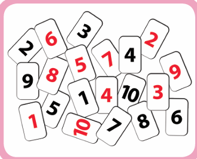
Rules for the game
1) If a card with number in black is picked, the player should move the token forward and if a card with number in red is picked, the player should move the token backward as per the number shown on the card.
2) Whoever reaches the number 20 first will be declared as the winner. (more students can play this game by choosing different Coloured tokens)
Yuvan , Subha, I have chosen the blue token.
Subha, Okay, Then I shall take the yellow token.
Yuvan, The number strip is ready as shown below and let both the tokens be placed at the starting position 0. Shall we start playing?
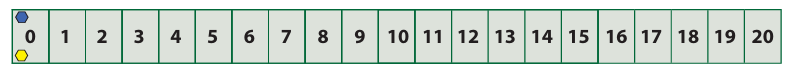
Subha, Yes. I shall pick a card first. I have picked a card and it shows 5 in black colour. So I will move forward to keep my yellow token at 5 on the number strip.
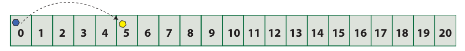
Yuvan, Now, I pick It is number 1 in black again. I will keep my blue token by moving one step forward at 1 on the number strip.
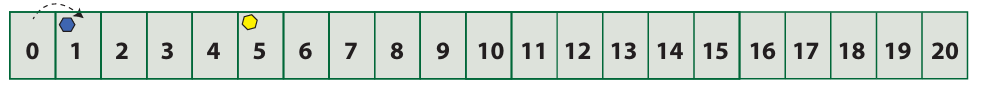
Subha, I pick a card now and it shows red colour number 2 on it. I need to move backward by 2 steps and I shall keep my token at 3. Is it correct, Yuvan?
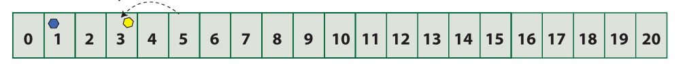
Yuvan, Fine Subha. Now, I have picked the card which shows 1 in red colour. Oh, no. I have to move backward by one step to be again at the starting position zero
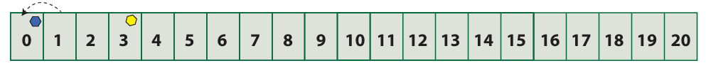
Subha, I am 3 steps ahead of you! Now, I have the red colour 4 card. I need to move 4 places backward from 3. But,where shall I keep my token, Yuvan? I moved 3 places only but need one more place behind 0. There is no number on the left of zero.
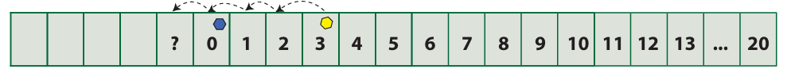
Subha, Shall I mark it as 1 again?
Yuvan No, Subha. That won’t be correct. We know that 1 already exists to the right of zero.
Subha, Then, what should I do? I can’t move to the left of ' zero '. Is the game over or shall I pick another card to continue?
The Teacher intervenes
Teacher, Yuvan and Subha, why can't you think of extending the number strip to the left of zero as 1, 2 3 and so on such that the distance between 1 and zero is the same as the distance between zero and 1 and also the distance between 2 and zero is the same as the distance between zero and 2 and extending likewise?
Subha, Yes Teacher, I understand that the * will now indicate that the numbers are on the left of zero, and also the numbers are less than zero.
Teacher, To sustain the interest in the game, continue playing with a small addition in the rule as whoever reaches *20 first, will also be considered as the winner!
Yuvan So Subha, you shall keep it at *1.
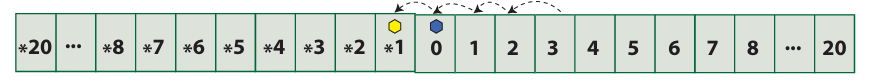
Yuvan : What, if you pick the card having red colour number again which shows 4 ?
Subha : I am clear Yuvan. I will move backward 4 places from *1 to keep my token at *5.
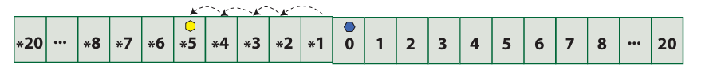
Yuvan , Well said…! What can you say, assuming that I am at 5?
Subha, Yes, Yuvan. We will be at the same distance but on the opposite sides of ' zero. Am I right?
Yuvan Yes. you are right but your value is less than mine as you go to the left of zero.
Think
Who will win finally? Which is the factor that will decide the winner? How far can you extend the numbers on both sides of the strip?
From the above game, we understand that there is a need to go beyond 0 on to its left! We also observe that as 1 is to the right of zero, there should exist * 1 to its left with the same distance as 1 and it extends on both sides in the same way.
We generalize this * symbol to (minus or negative sign) to denote the numbers less than ' zero ' which conveys the meaning as less, deficit, reduce, down, left, ecetera
MATHEMATICS ALIVE INTEGERS IN REAL LIFE |
|
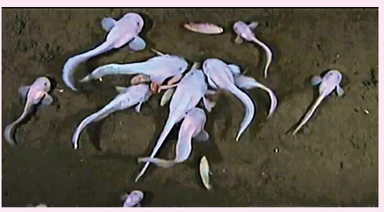 Mariana Snailfishes live in the Mariana Trench at twenty six thousand and two hundred, feet below the sea level. |
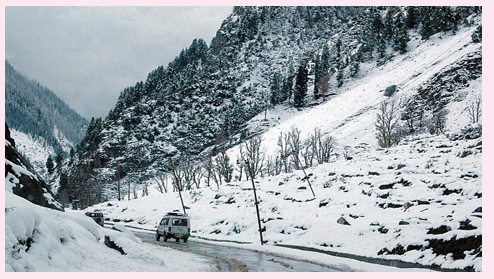
Temperature in the Ladakh region of India records at minus 14°C below zero degree celcious on an average in the month of January every year. |
We know that when zero is included to the set of natural numbers then the set of numbers is called as Whole numbers.
Now, let us recall the number line which shows the representation of whole numbers.
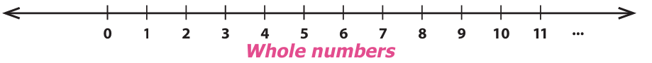
We have seen the need to extend the number line beyond zero to its left. We call the numbers minus 1, minus 2, minus 3, (to the left of zero) as negative numbers or negative integers and the numbers 1, 2, 3, (to the right of zero) as positive numbers or positive integers. Hence, the new set of numbers minus 3, minus 2, minus 1, zero, 1, 2, 3, are called Integers. It is denoted by the letter Z. The Integers are shown in the number line below.
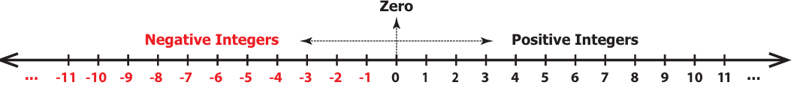
The plus and minus sign before a number tells, on which side the number is placed from zero. minus symbol in front of a number is read as negative or minus. For example, minus 5 is read as negative 5 or minus 5.
Note
The number line can be shown both in horizontal and vertical directions.
The number 0 is neither positive nor negative and hence has no sign.
Natural numbers are also called as positive integers and Whole numbers are also called as non negative integers.
The positive and the negative numbers together are called as Signed numbers.
They are also called as Directed numbers.
A number without a sign is considered as a positive number. For example, 5 is considered as plus 5.
The letter Z was first used by the Germans, because the word for Integers in the German language is ZAHLEN which means number.
Example 1
Draw a number line and mark the integers, 6, minus 5, minus 1, 4 and minus 7 on it.
Solution
Try these
1) Read the following numbers orally
1) plus 24
2) minus 13
3) minus 9
4) 8
2) Draw a number line and mark the following integers.
1) zero
2) minus 6
3) 5
4) minus 8
3) Are all natural numbers integers?
4) Which part of the integers are not whole numbers?
5) How many units should you move to the left of 3 to reach minus 4
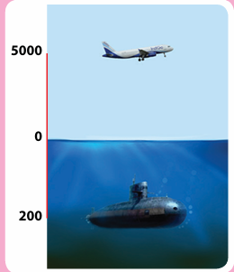
An aeroplane is flying at a height of Five thousand, m, above the sea level and a submarine is at 200m below sea level. |
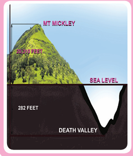
The height of the peak Mt. McKinley is, twenty thousand three hundred and ten, feet above the sea level, and the death valley, is 282 feet below the sea level. |
The depth at which sharks are found, in the deep sea say at eight hundred m below the sea level, |
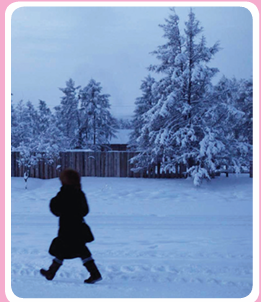
The temperature at the hill station Oymyakon, the coldest place in Russia going minus forty five degree celcious below zero degree celcious. |
Activity
Ask your parents slash grandparents about the depth at which the various types of vegetables (seeds) should be planted, for their better and efficient growth. For the same, draw a number line indicating the depth of various vegetable seeds. (Draw the planting chart)
2 point 2 point 2 opposite of a number
The idea of opposite of a number is not a new one. A few situations like, a man makes a profit of Rupees. Five hundred or he loses Rupees Five hundred by selling an article; credit and debit of Rupees, seventy five thousand, in a cash transaction of a business are ‘opposite’ to each other.
Think about the situation
Suppose two rabbits R and S jump along a number line (like) on the opposite sides of zero . Rabbit R jumps 2 steps 3 times to the right of zero and Rabbit S, jumps 3 steps 2 times to the left of zero as shown in the figure below. Where will both of them stand on the number line? Are they at equal distance from zero?

Clearly, the rabbit R stands at 6 and the rabbit S, stands, at minus 6 on the number line. The distance, from zero. to 6, on the number line is 6 units, and the distance from zero to minus 6, on the number line is also 6 units. The numbers 6 and minus 6 are at the same distance, from zero. on the number line. That is, the rabbits R and S stand at the same distance, from zero, but in opposite directions.
Here, 6 and minus 6, are opposite to each other. That is, two numbers that are at the same distance, from zero.on the number line, but are on the opposite sides, of it, are opposite to each other. For every positive integer, there is a corresponding negative integer and vice versa. The opposite of each integer is shown in the figure.
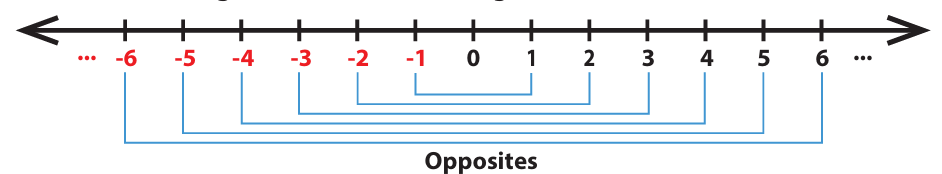
Note
The opposite of the opposite of a number is the number itself. For example minus (minus 5) read as negative of negative 5 or minus of minus 5 is equal to 5 itself.
Now, it is easy to write the opposite of the numbers 12, minus 7, minus two hundred and twenty five, and six thousand. Note that, the opposite of a positive integer is negative, and the opposite of a, negative integer is positive, where as the opposite of zero is zero.
Number |
Its opposite |
Number,12 or plus 12 |
Its opposite, Minus 12 |
Number, Minus 7 |
Its opposite, Plus 7 or Minus open bracket Minus 7 close bracket, is equal to 7 |
Number, Minus 225 |
Its opposite, Plus, two hundred and twenty five, |
Number, six thousand, or plus six thousand |
Its opposite, Minus, six thousand, |
The “opposites” are naturally more convenient to relate and understand with many of our daily life situations like saving spending, height above below, where
1) the saving is treated as positive and the spending is treated, as negative.
2) the height above the sea level is regarded as positive and the height below the sea level is regarded as negative.
Example 2
Represent the following situations as integers
1) A gain of Rupees thousand
2) 20°C below 0°C
3) Nineteen ninety, BC (BCE)
4) A deposit of Rupees fifty thousand eight hundred and forty seven,
5) 10 kilo gram below normal weight,
Solution
1) As gain is positive, Rupees one thousand is denoted as plus Rupees one thousand.
2) 20°C below 0°C is denoted as Minus 20°C.
3) A year in BC (BCE) can be considered as a negative number and a year in AD (CE) can be considered as a positive number. Hence, Nineteen ninety, BC (BCE) can be represented as minus Nineteen ninety,.
4) A deposit of Rupees, Fifteen thousand and eight hundred forty seven, is denoted as plus Rupees, Fifteen thousand and eight hundred forty seven.
5) 10 kilo gram below normal weight is denoted as Minus 10 kilo gram .
Example 3
Using the number line, write the integer which is 5 more than Minus 6.
Solution
From Minus 6, we can move 5 units to its right to reach Minus 1 as shown in the figure.
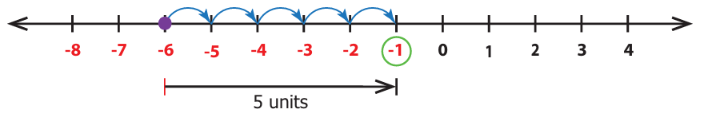
Example 4
Find the numbers on the number line that are at a distance of 3 units in the opposite directions to Minus 2.
Solution
From Minus 2, we can move 3 units to the left and right as shown in the figure.
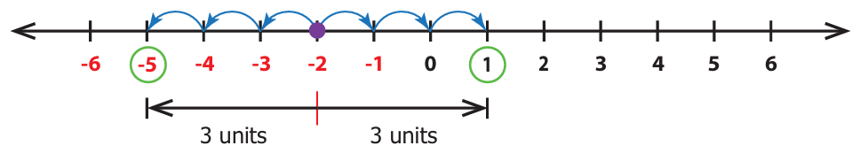
The required numbers are: 1 on the right of Minus 2 and Minus 5 to the left of Minus 2.
Try these
1) Find the opposite of the following numbers:
1) 55
2) Minus three hundred,
3) plus, five thousand and eighty,
4) Minus, two thousand five hundred,
5) zero
2 Represent the following situations as integers.
1) A loss of Rupees two thousand,
2) two thousand eighteen, AD (CE)
3) Fishes found at 60 meter below the sea level.
4) 18°C below 0°C
5) Gaining 13 points
6) A jet plane at a height of, two thousand five hundred, meter
3) Suppose in a building, there are, 2 basement floors. If the ground floor is denoted as zero, how can we represent the basement floors
ISRO Scientists often find it convenient to designate a given time as zero time and then refer to the time before and time after as being negative and positive respectively. This practice is followed in the launching of rockets. If the time to take off is 1 minute, then it is 1 minute before the launch and hence denoted as minus 1 minute
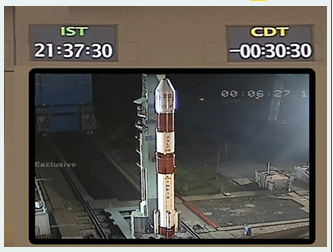
We have already seen the ordering of numbers in the set of natural and whole numbers. The ordering is possible for integers also.
2 point 3 point 1 Predecessor and Successor of an Integer
Recall that for a given number its predecessor is one less than it and its successor is one more than it. This applies for integers also.
Example 5
Find the predecessor and successor of
1) zero and
2) minus 8 on a number line.
Solution
Place the given numbers on the number line then move one unit to their right and left to get the successor and the predecessor respectively.
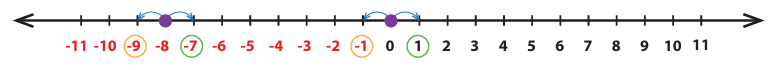
We can see that the successor of zero is plus 1 and the predecessor of zero is minus 1 and the successor of minus 8 is minus 7 and the predecessor of minus 8 is minus 9.
Note
Every positive integer is greater than each of the negative integers. Example:
3 greater than minus 5
zero is less than every positive integer but greater than every negative integer.
Example, zero less then 2 but zero grater then minus 2
2 point 3 point 2 Comparing Integers
Ordering of integers is to compare them. It is very easy to compare and order integers by using a number line.
When we move towards the right of a number on the number line, the numbers increase in value. On the other hand, when we move towards the left of a number on the number line, the numbers decrease in value.
We know that, 4 less than 6 , 8 greater than 5, and so on. Now let us consider two integers say minus 4 and 2. Mark them on the number line as shown below.
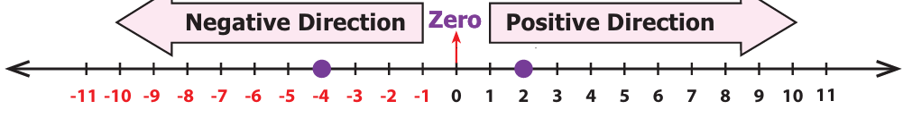
Fix minus 4 now. See whether 2 is to the right or the left of minus 4. In this case, 2 is to the right of minus 4 and in the positive direction. So, 2 greater than minus 4 or otherwise minus 4 less than 2.
Example 6
Compare minus 14 and minus 11
Solution
Draw number line and plot the numbers minus 14 and minus 11 as follows.
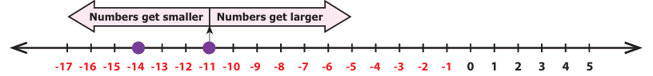
Fixing minus 11, we find minus 14 is to the left of minus 11. So, minus 14 is smaller than minus 11. That is, minus 14 less than minus 11.
Think
For two numbers, say 3 and 5, we know that 5 grater than 3. Will there be a change in the inequality if both the numbers have negative sign before them?
Activity
Prepare positive integer number cards from 1 to 10 and negative integer number cards from minus 1 to minus 10. Shuffle them well and keep them upside down. Call students one by one, ask them to select any two number cards and make them to find which is greater of the two numbers.
Example 7
Arrange the following integers in ascending order: minus 15, zero, minus 7, 12, 3, minus 5, 1, minus 20, 25, 18
Solution
Step 1:
First, separate the positive integers as 12, 3, 1, 25, 18 and the negative integers as minus 15, minus 7, minus 5, minus 20
Step 2:
We can easily arrange positive integers in ascending order as 1, 3, 12, 18, 25 and negative integers in ascending order as minus 20, minus 15, minus 7, minus 5.
Step 3:
As zero, is neither positive nor negative, it stays at the middle and now the arrangement minus 20, minus 15, minus 7, minus 5, zero, 1, 3, 12, 18 and 25 is in ascending order.
Try these
1) Is minus 15 less than minus 26? Why?
2) Which is smaller minus 3 or minus 5? Why?
3) Which is greater 7 or minus 4? Why?
4) Which is the greatest negative integer?
5) Which is the smallest positive integer?
Integers
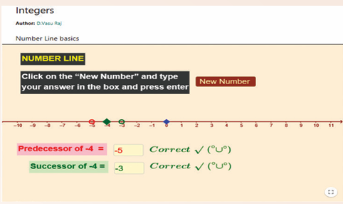
Step 1 Open the Browser by typing the URL Link given below (or) Scan the QR Code. GeoGebra work sheet named Integers will open. There is a worksheet under the title Number Line basics.
Step 2 Click on the New Number to get new question and type your answer in the respective check boxes, next to Predecessor and Successor and press enter
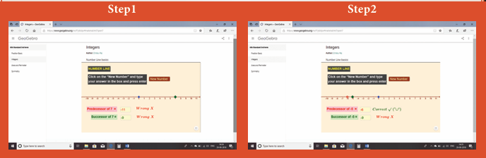
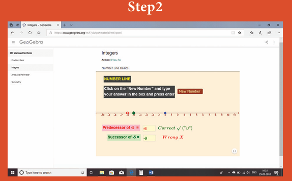
Browse in the link: Integers: https://ggbm.at/mt7qxxn7 or Scan the QR Code.
1) The potable water available at hundred meter below the ground level is denoted as desh meter .
2) A swimmer dives to a depth of 7 feet from the ground into the swimming pool. The integer that represents this, is desh feet.
3) minus 46 is to the desh side of minus 35 on the number line.
4) There are desh integers from minus 5 to plus 5 (both inclusive).
5) desh is an integer which is neither positive nor negative.
2) Say True or False
1) Each of the integers minus 18, 6, minus 12, zero is greater than minus 20.
2) minus 1 is to the right of zero.
3) minus 10 and 10 are at equal distance from 1.
4) All negative integers are greater than zero.
5) All whole numbers are integers.
3) Mark the numbers, 4, minus 3, 6, minus 1 and minus 5 on the number line.
4) On the number line, which number is
1) 4 units to the right of minus 7?
2) 5 units to the left of 3?
5) Find the opposite of the following numbers.
1) 44
2) minus 19
3) zero,
4) minus, three hundred and twelve,
5) Seven hundred and eighty nine,
6) If 15 km east of a place is denoted as plus 15 kilo meter, what is the integer that represents 15 kilo meter west of it?
7) From the following number lines, identify the correct and the wrong representations with reason.
![IMAGE, 1)The image is a number line with markings. minus six, minus five, minus four, minus three, minus two, minus one, zero, two, four, Six, eight, ten, twelve, fourteen. 2) The image is a number line, with markings from minus Six to Seven, 3) The image is a number line, with markings. from minus five to Seven Where an empty Space is left between minus two and minus one, 4) The image is a number line of even nuumbers, from minus twelve to fourteen. Also there is a point in between every two numbers. 5) The image is a number line, in which zero Placed, in the middl,e and numbers from, One to seven is written on the right, where a numbers from, minus six, minus one, is written. on the left of Zero. where minus six Starts from Zero.](images/image110.png)
8) Write all the integers between the given numbers.
1) 7 and 10
2) minus 5 and 4
3) minus 3 and 3
4) minus 5 and zero,
9) Put the appropriate signs as less then, greater than or equal to in the box.
1) minus 7, in the m t box, 8
2) minus 8 , in the m t box, minus 7
3) minus nine hundred and ninety nine, in the m t box, minus one thousand,
4) minus, eleven hundred and eleven, in the m t box, minus, eleven hundred and eleven,
5) zero , in the m t box, minus, two hundred,
10) Arrange the following integers in ascending order.
1) minus 11, 12, minus 13, 14, minus 15, 16, minus 17, 18, minus 19, minus 20
2) minus 28, 6, minus 5, minus 40, 8, zero, 12, minus 1, 4, 22
3) minus one hundred, 10, minus one thousand, one hundred, zero, minus 1, one thousand, 1, minus 10
11) Arrange the following integers in descending order.
1) 14, 27, 15, minus 14, minus 9, zero, 11, minus 17
2) minus 99, minus hundred and twenty, 65, minus 46, 78, four hundred, minus six hundred,
3) hundred and eleven, minus two hundred and twenty two, three hundred and thirty three, minus four hundred and forty four, five hundred and fifty five, minus, six hundred and sixty six, seven thousand seven hundred and seventy seven, minus, eight hundred and eighty eight,
12) There are desh positive integers from minus 5 to 6.
a) 5
b) 6
c) 7
d) 11
13) The opposite of 20 units to the left of zero is.
a) 20
b) zero
c) minus 20
d) 40
14) One unit to the right of minus 7 is desh.
a) plus 1
b) minus 8
c) minus 7
d) minus 6
15) 3 units to the left of 1 is
a) minus 4
b) minus 3
c) minus 2
d) 3
16) The number which determines marking the position of any number to its opposite on a number line is,
a) minus 1
b) zero
c) 1
d) 10
Miscellaneous Practice Problems
1) Write two different real life situations that represent the integer minus 3 m
2) Mark the following numbers on a number line
1) All integers which are greater than minus 7 but less than 7.
2) The opposite of 3.
3) 5 units to the left of minus 1
3) Construct a number line that shows the depth of 10 feet from the ground level and its opposite.
4) Identify the integers and mark on the number line that are at a distance of 8 units from minus 6.
5) Answer the following questions from the number line given below .
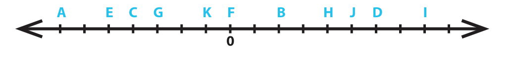
1) Which integer is greater, G or K ? Why ?
2) Find the integer that represents C,
3) How many integers are there between G and H?
4) Find the pairs of letters which are opposite of a number.
5) Say True or False, 6 units to the left of D, is minus 6.
6) If G is 3 and C is minus 1, what numbers are A and K on the number line?
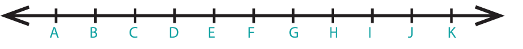
7) Find the integers that are 4 units to the left zero and 2 units to the right of minus 3.
Challenge Problems
8) Is there the smallest and the largest number in the set of integers? Give reason.
9) Look at the Celsius Thermometer and answer the following questions:
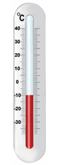
1) What is the temperature that is shown in the Thermometer?
2) Where will you mark the temperature 5 degree Celcious below zero degree Celcious in the Thermometer?
3) What will be the temperature, if 10 degree Celcious is reduced from the temperature shown in the Thermometer?
4) Mark the opposite of 15 degree Celcious in the Thermometer.
10) P, Q, R and S are four different integers on a number line. From the following clues, find these integers and write them in ascending order.
1) S is the least of the given integers.
2) R is the smallest positive integer.
3) The integers P and S are at the same distance from zero.
4) Q is 2 units to the left of integer R.
11) Assuming that the home to be the starting point, mark the following places in order on the number line as per instructions given below and write their corresponding integers
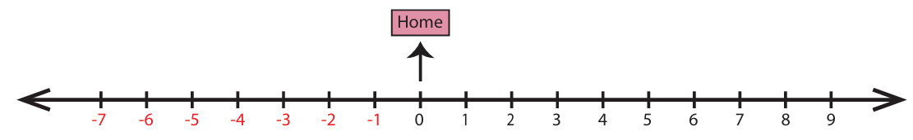
Places, Home, School, Library, Playground, Park, Departmental Store, Bus Stand, Railway Station, Post Office, Electricity Board.
Instructions:
1) Bus Stand is 3 units to the right of Home.
2) Library is 2 units to the left of Home.
3) Departmental Store is 6 units to the left of Home.
4) Post Office is 1 unit to the right of the Library.
5) Park is 1 unit right of Departmental Store.
6) Railway Station is 3 units left of Post Office.
7) Bus Stand is 8 units to the right of Railway Station.
8) School is next to the right of Bus Stand.
9) Playground and Library are opposite to each other.
10) Electricity Board and Departmental Store are at equal distance from Home.
12) Complete the table using the following hints:
C1 the first non negative integer.
C3 the opposite to the second negative integer.
C5 the additive identity in whole numbers.
C6 the successor of the integer in C2.
C8 the predecessor of the integer in C7.
C9 the opposite to the integer in C5.
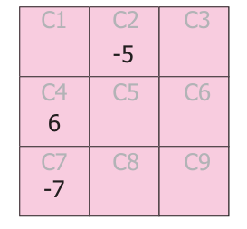
13) The following bar graph shows the profit (plus) and loss (minus) of a small scale company (in crores) between the years Two thousand eleven, to, two thousand seventeen.
![image, There is a image of bar graph shows, that profit in plus Symbol, and loss in minus Symbol, between the year two thousand Eleven, to two thousand Seventeen, A Vertical number line, in which zero is placed at the centre, and numbers from ten to fifty is marked, below as loss A horizontal line, with years from two thousand eleven, to two thousand seventeen is drawn, from zero In two thousand eleven, red bar is drawn, from Zero to ten in downward direction. In two thousand twelve red bar is drawn, from zero to twenty in downward direction,. In two thousand thirteen blue bar is drawn, from zero to ten up ward direction. In two thousand fourteen a blue bar is drawn, from Zero to forty in upward direction. In two thousand fifteen a red bar, is drawn from Zero to forty in downward direction, In two thousand Seventeen a blue Bar, is drawn from Zero to thirty in upward direction.](images/image116.png)
1) Write the integer that represents a profit or a loss for the company in Two thousand fourteen?
2) Denote by an integer on the profit or loss in Two thousand sixteen.
3) Denote by integers on the loss for the company in Two thousand eleven and Two thousand twelve.
4) Say True or False The loss is minimum in Two thousand twelve.
5) Fill in The amount of loss in Two thousand eleven, is desh as profit in Two thousand thirteen.
The set of numbers, minus 3, minus 2, minus 1, zero, 1, 2, 3, is called Integers. It is denoted by the letter Z.
The number zero, is neither positive nor negative
Two numbers that are at the same distance from, zero on the number line, but are on the opposite sides of it, are opposite to each other.
Natural numbers are called as positive integers and Whole numbers are called as non negative integers.
Positive and negative numbers together are called as Signed numbers. Signed numbers are also called as Directed numbers.

To understand the concept of perimeter and area of closed shapes.
To calculate the perimeter and area of square, rectangle, right angled triangle and their combined shapes.
To understand the usage of units appropriately for area and perimeter.
We come across many situations in our day to day life which deal with shapes, their boundaries and surfaces.
For example,
A fence built around a land.
Frame of a photograph.
Calculating the surface of the wall to know the quantity of the paint required.
Wrapping the textbooks and notebooks with brown sheets.
Calculating the number of tiles to be laid on the floor.

Some situations need to be handled tactfully and efficiently for the following reasons.
Using the optimum space to build a dining hall, kitchen, bedroom etcetera. in constructing a house in the available land and planning of materials required.
Arranging the things like cot, television, cupboard, table etcetera., in the proper place within the available space at home.
Reducing the expenses in all the above activities.
In this context, learning of perimeter and area will be of great importance,
Think about the situation
Apoorva and her brother return from school. Their mother serves them some biscuits. While they eat them one by one, Apoorva arranges the biscuits on a tray. She finds that the tray can hold only 12 biscuits. If she has to extend spreading the remaining biscuits also in the same manner, she will need a bigger tray in size because, already 12 biscuits occupied the surface of the tray completely. The total length of the visible borders of the tray is said to be the perimeter and the surface occupied by the biscuits is said to be the area of the tray. Let us discuss about the perimeter and area in detail in this chapter.
![image, This picture has many biscuits placed in circular. manner overlapping one another, Second Pictures shows, twelve biscuits, which are placed in three rows and four Columns in a rectangle tray, Third picture 's just an rectangle named as ABCD ,with arrows in clock wise direction, win which outer line is marked in green, to show about its perimeter, Fourth picture ,is about twelve biscuits in which biscuits are placed in three rows and four Columns in a rectangular tray on which it is written as Area. Fifth picture is just a line with markings, as ABC, D, and A, just to know this as perimeter.](images/image119.png)

Activity
Observe the following shapes and answer the questions given below:
![image, The first picture shows that a triangle. First three row's first dots, alone are Connected Connected to form, a vertical Side of a triangle. In the third row first three douts are Connected to the base, of ot triangle. In the first row first dot, Second row second dot, and third row third dot, are Connected to form a hypotareous of the triangle, The second picture shows, that a square, In the first row four, five and sixth dot's are connected to form one side of a triangle, In the first row fourth dot, Second row fourth dot, and third row fourth dot, are Connected to form the second side of the square., In the third row, four, five and sixth dots, are Connected together to form the third side of the square. In the first, second and third rows, sixth dots are connected to form the fourth side, of the Square, The third picture represents an angle, In the first row, nineth dot, Second row eighth dot, and in the third row seventh dots, are Connected to form the one first arm, of the angle. In the third row Seventh, eighth and nineth dots, are Connected to form the second arm, of the angle. The fourth picture, belongs to the quadritateral family, In the first row twelve and thirteenth dots, are connected by a line. In the first row twelvth dot, in second row eleventh dot, and in the third row tenth dots, are Connected by a line. and third rows tenth eleventh, twelth,and thirteenth dots are Connected by a line, Again first row, second, and third rows, thirteenth dots, are connected by a line, which gives a Closed The fifth picture shows, that the open figure, In the first row fourteenth, fifteenth and Sixteenth dots, are Connected with a line, again in the first row, fourteenth dot, second, and third, row also fourteenth dots, are Connected by a vertical line, In the third row fourteenth. fifteenth and dots are Connected by a line again in the third row sixteenth, Second row leventh, and in the first row eighteenth dots, are Connected by a line, which gives a open figure. The Sixth picture shows, that the rectangle. In the first row nineteenth, twentyth and twenty first dots, are Connected by a line, Again in the first, second, third and fourth row nineteenth dots, are vertically Connected by a line, again in the fourth row nineteenth. twenty and twenty first dots are connected by a horizontal line, again in the first, second, third and fourth row twenty first dots are connected by Line which gives a rectangle. 9 to The Seventh picture represents, the closed figure, In the fourth row, third point, fifth row fourth point, sixth row fifth points, are Connected by a lime, In the Sixth row and the Seventh row, fifth points are Connected by a line, In the Seventh row, first five points, are Connected by a horizontal line, in the Sixth and seventh row, first points are connected.by a line again fouth row. third point, fifth row second point and Sixth row first point Connected by a line which gives a closed figure. The eighth picture shows that the isosceles triangle. In the fifth row eighth point, Sixth row nineth point and seventh row tenth points are Connected by a line In the seventh row six seven, eight nine and tenth points are Connected by a line horizontally. in the fifth row eighth point, Sixth row seventh print and seventh row sixth paint's are Connecte by a line which gives isosceles trangle, The ninth picture represents the figure, T. In the fifth row eleventh point twelve, thirteen and fourteenth points, are connected by a line. In the fifth and Sixth row, fourteenth points are connected by a line, in the sixth row thirteen id fourteenth points are Connected by a line In the sixth and Seventh row thirteen pants are Connected by a line, In the seventh row twelvth and thirteenth points are Connected by a line, in the sixth and seventh row the twelvth points are Connected by a line, in the sixth row eleventh and twelvth points are connected by a line in the fifth and sixth row eleventh points are Connected by a line, which gives a closed figute shaped, T. The tenth picture represents the closed figure. In the fourth row fifteenth and sixteenth dots are Connected by a line, in the fourth, fifth and Sixth rows sixteenth points are Connected in the sixth row fifteenth and Sixteenth points are Connected, in the fourth, and sixth rows Seventeenth points are Connected by a ine, in the fourth row seventeenth and eighteenth points are Connected, in the four, five, six and seventh row eighteenth points are Connected, in the seventh row fifteen, Sixteen seventeen and eighteenth points Connected horizontally by a line, in four, five, six and seventh row's fifteenth points are Connected finally in the fourth row fifteenth and sixteenth points are Connected, which gives a closed figure. The eleventh pictiore, represents open figure where fifth, sixth and seventh row nineteenth points, are connected and in seventh row nineteen twenty and twenty one points by a line again five, six, Seven rows. twenty first points are connected, which gives a Open figure,](images/image121.png)
1) Mark the closed shapes as tick, mark ’ and open shapes as x,
2) Find the measure of the boundary of closed shapes by using a ruler.
3) Which closed shape has the shortest boundary?
4) Which closed shape has the longest boundary?
The length of the boundary of any closed shape is called its perimeter. Hence, ‘the measure around’ of a closed shape is called its perimeter. The unit of perimeter is the unit of length itself. The units of length may be expressed in terms of metre, millimetre, centimetre, kilometre, inch, feet, yard etcetera.,

The word perimeter is derived from the Greek words ‘peri’ and ‘metron’, where ‘peri’ means ‘around’ and ‘metron’ means ‘measure
3 point 2 point 1 Perimeter of a Rectangle

Perimeter of a rectangle is equal to Total boundary of the rectangle
is equal to length plus breadth plus length plus breadth
is equal to 2 length plus 2 breadth
is equal to 2 open bracket length plus breadth close bracket
Let us denote the length, breadth and the perimeter of a rectangle as l, b and P respectively. Perimeter of the rectangle, P is equal to 2 into open bracket l plus b close bracket units
Note
In a rectangle the opposite sides are equal in length.
For the pathway shown in the figure, the outer boundary of the pathway is P Q R S and its inner boundary is A B C D

Example 1
If the length of a rectangle is twelve centimeter and the breadth is ten centimeter , then find its perimeter.
Solution
l, is equal to twelve centi meter
b is equal to ten centi meter
P is equal to 2 open bracket l plus b close bracket units
is equal to 2 open bracket twelve plus ten close bracket,
is equal to 2 into 22
is equal to 44 cm Perimeter of the rectangle is 44 centi meter.

Perimeter of a square is equal to Total boundary of the square.
is equal to side plus side plus side plus side.
is equal to open bracket 4 into side close bracket units
If the side of a square is ‘s’ units, then.
Perimeter of the square, P, is equal to open bracket 4 into s close bracket units is equal to 4s units.
Note
In a square, all the sides are equal in length.
The perimeter of a regular shape with any number of sides is equal to number of sides into length of a side,
Example 2
The side of a square is 5 centi meter. Find its perimeter.
Solution,
S, is equal to 5 centi meter
P, is equal to open bracket, 4 into, s, close bracket, units
is equal to 4 into 5
is equal to 20 centimeter
Perimeter of the square is 20 centi meter.
Perimeter of a triangle is equal to Total boundary of the triangle
is equal to, side 1, plus, side 2, plus, side 3 .
If three sides of a triangle are taken as a, b and c, then the Perimeter of the triangle, P, is equal to open bracket a, plus b, plus c, close bracket units.

Example 3
Find the perimeter of a triangle whose sides are 3 centimeter, 4 centimeter and 5 centimeter.
Solution
a is equal to 3 centimeter
b is equal to 4 centimeter
c is equal to 5 centimeter
P is equal to open bracket a, plus b, plus c close bracket units
is equal to 3 plus 4 plus 5 is equal to twelve centimeter
Perimeter of the triangle is twelve centi meter.


Is the perimeter of the given shape possible? Why?
Try these
1) Draw a shape with perimeter 16 centimeter in a dot sheet.
2) What is the perimeter of a rectangle if the length is twice its breadth?
3) What would be the perimeter of a square if its side is reduced to half?
4) What is the perimeter of a triangle if all sides are equal in length?
Activity
Choose any five items like Table, A4 sheet, Note book., etcetera in the classroom. Guess the approximate length of each side by observation and write down the estimated perimeter of the item. Then, measure by using ruler and record the actual perimeter and find the difference in the following table (to the nearest centimeter).
Item |
Estimated Perimeter |
Actual Perimeter |
Difference |
Item, Remaining below 4 cell, are Mt, |
Estimated Perimeter, Remaining below 4 cell, are Mt, |
Actual Perimeter, Remaining below 4 cell are Mt,, |
Difference, Remaining below 4 cell are Mt, |
|
|
|
|
|
|
|
|
|
|
|
|
Example 4
Find the length of the rectangular black board whose perimeter is 6 meter and the breadth is 1 meter .
Solution
Perimeter of the black board, P is equal to 6 meter Breadth of the black board, b is equal to 1 meter length, l, is equal to ?
2 open bracket l plus b close bracket is equal to 6
2 open bracket l plus 1 close bracket is equal to 6
l plus 1 is equal to 6 divided by 2
is equal to 3
l, is equal to 3 minus 1
is equal to 2 meter
The length of the black board is 2 meter.

Example 5

Find the side of a square shaped postal stamp of perimeter 8 centimeter.
Solution Perimeter of the square, P, is equal to 8 centimeter
4 into S is equal to 8
S is equal to 8 divided by 4
is equal to 2 centimeter
The side of the stamp is 2 centimeter.
Example 6
Find the side of the equilateral triangle of perimeter, hundred and twenty nine, centimetre.
Solution
Perimeter of the equilateral triangle, P is equal to, one hundred and twenty nine, centimeter
a, plus a, plus a, is equal to one hundred and twenty nine,
3 into a, is equal to one hundred and twenty nine,
a, is equal to one hundred and twenty nine, divided by 3
is equal to 43 centimeter
The side of the equilateral triangle is 43 centimeter.
Example 7
Thendral, Tharani and Thanam are given a thread piece each of length 12 centimeter. They are asked to make a rectangle, a square and a triangle respectively with the thread for their Math activity. In how many ways, can they make the respective shapes?

Solution
Thendral
Perimeter of the rectangle, P is equal to twelve centimeter
2 open bracket l plus b close bracket is equal to 12
l plus b is equal to 12 divided by 2 is equal to 6 centimeter
The possible pairs of measures whose sum is
6 are open bracket 5, comma 1 close bracket and open bracket 4, 2 close bracket.
Hence, Thendral can make a rectangle in 2 ways. She can make a rectangle of length 5 centimeter and breadth 1 centimeter and another one with length 4 centimeter and breadth 2 centimeter.

Tharani
Perimeter of the square, P is equal to twelve centimeter
4 into s is equal to twelve
s is equal to twelve divided by 4 is equal to 3 centimeter
Hence, Tharani can make only one square of side 3 centimeter.

Thanam
Perimeter of the triangle, P, is equal to twelve centimetre
a, plus b plus c is equal to twelve centimetre
The possible triplets of measures whose sum is twelve and also satisfying the triangle inequality are open bracket 2, 5, 5 close bracket, open bracket 3, 4, 5 close bracket open bracket 4, 4, 4 close bracket. Hence, Thanam can make 3 triangles of sides 2 centimetre r, 5 centimetre and 5 centimetre;
3 centimetre, 4 centimetre and 5 centimetre and 4 centimetre, 4 centimetre and 4 centimetre.

Think
Can different shapes have the same peri meter?
Example 8
Find the cost of fencing a square plot of side twelve meter at the rate of Rupees 15 per meter,
Solution
Side of a square plot is equal to twelve meter
Perimeter of the square plot is equal to open bracket 4 into s, close bracket units
is equal to 4 into twelve is equal to 48 meter,
Cost of fencing the plot at the rate of Rupees 15 per meter is equal to 48 into 15 is equal to Rupees seven hundred and twenty,
Try these
1) Find the breadth of the rectangle with perimeter 14 meter and length 4 meter .
2) The perimeter of an isoseles triangle is 21 centimeter. Find the measure of equal sides given that the third side is 5 centimeter.
Recall the Apoorva and her biscuits arrangement’ in the beginning of this chapter. We do not know the measure of the side of the biscuit. But we know it is in the shape of a square. Let its side be 1 unit. The tray can hold 12 square biscuits (square units). That is, 12 square biscuits (square units) occupy the entire surface of the tray. This space of the tray is called the Area of the tray. Thus, the area of any closed shape is the surface occupied by the number of unit squares within its boundary. Suppose each side of a biscuit is of 1 inch length, then the area of the tray is 12 square inches.


As the above tray is in the shape of a rectangle, split it into small and uniform squares called unit squares. There are 4 unit squares along its length and 3 unit squares along its breadth. Totally, twelve square biscuits occupy this rectangle and so the area of this rectangle is twelve square units.

Suresh brought a groundnut burfi packet to school as snacks to eat during the break. As he peeled off the cover, he saw that there are 3 rows and each row has 5 square pieces. What he sees here is that the total number of small squares in the given burfi is 15. So, the area of the given rectangular burfi is 15 square burfi pieces.

Tamizhazhagi wants to share a chocolate bar with her friends on her birthday. The chocolate bar that she has bought has 5 square pieces horizontally and 4 square pieces vertically. She finds that there are 20 identical unit square chocolate pieces so that she can give it to 19 of her friends and have 1 for herself.
Here, the total number of square chocolate pieces is 20, which represents the area of the whole chocolate bar.
The total number of squares in all these cases can be arrived by multiplying the number of squares along its length with the number of squares along its breadth instead of counting them.
Therefore the area of any rectangle is equal to open bracket length into breadth close bracket square units
is equal to open bracket l into b close bracket square units.
Note
Square units’ can also be written as ‘unit square 2
Try these
Find the number of tiles required to fill the area of following figures.
![image, The first picture has four rows, four Columns of square shaped where as first row, first Cell is filled with green tiles. ,in first, second third and fourth row all the second cells, are filled with green colour tiles, the fourth row third and fourth Cell are filled with green tiles, In the second picture four rows and three Columns in the first row second cell is filled with green tiles, In the Second row first and third cell are filled with green tiles, in the third row second cell alone is filled with green, tiles in the fourth row first, third cell Is filled with green tiles in the third picture. four rows and three Columns where as in the first row first and third cell, are filled with green tiles and in second, third rows. second cell are filled with green tiles, last fourth row first and third cell are green tiles. In the fourth picture, four rows and four Columns, where as in the first row first and fourth cell are filled with green tiles, In the second third row, second and third cell are filled with green tiles, at last fourth row first and fourth Cell are filled with green tiles,](images/image139.png)
Example 9
Find the area of a rectangle of length twelve centi meter centi meter and breadth 7 centi meter.
Solution
Length of the rectangle, l is equal to twelve centi meter .
Breadth of the rectangle, b is equal to 7 centi meter .
Area of the rectangle A is equal to open bracket l, into b close bracket Square units.
is equal to twelve into 7 is equal to 84 Square centi meter.
If the length and breadth of a rectangle are equal, then it becomes a square. Area of the rectangle is equal to open bracket length into breadth close bracket square units.
is equal to open bracket side into side close bracket Square units
is equal to open bracket s into s close bracket Square units.
is equal to Area of a square,
Therefore area of a square is equal to open bracket s into s, close bracket Square units.
Note
When the rectangle is made into a square then length (l) is equal to breadth (b) is equal to side (s)
Example 10
Find the area of a square of side 15 centi meter.
Solution
Side of the square, s is equal to 15 centi meter
Area of the square, A is equal to open bracket s, into s close bracket square. units.
is equal to 15 into 15
is equal to two hundred and twenty five square centi meter. (or) two hundred and twenty five centi meter square
In a right angled triangle one of the sides containing the right angle is treated as its base (b, units) and the other side as its height (h, units)
When a rectangular sheet is cut along its diagonal, two right angled triangles are obtained.
Area of two right angled triangles is equal to Area of the rectangle
2 into Area of a right angled triangle is equal to l, into b
Area of the right angled triangle is equal to 1 divided by 2 into open bracket l into b close bracket square units.
The length and breadth of the rectangle are respectively the base (b) and height (h) of the right angled triangle. Hence, area of the right angled triangle is equal to 1 divided by 2 into open bracket b, into h, close bracket square units.

Activity
Mark the base and height of the following right angled triangles.

Example 11
Find the area of a right angled triangle whose base is 18 centimeter and height is twelve centimeter.
Solution Base, b is equal to 18 centimeter
Height, h is equal to twelve centimeter
Area, A is equal to 1 divided by 2 into open bracket b, into h, close bracket square units
is equal to 1 divided by 2 into open bracket 18 into twelve close bracket
is equal to, one hundred and eight, square centimeter (or) one hundred and eight, centimeter square

Try these
Draw the following in a graph sheet.
1) Two different rectangles whose areas are 16 centimeter square each.
2) A shape with perimeter 14 centimeter and area twelve square centimeter.
3) A shape with area 36 square centimeter.
4) Form different shapes using 4 unit squares and find their perimeter and area. Open bracket, Sides of the squares must fit exactly close bracket,
A Combined shape is the combination of several closed shapes. The perimeter is calculated by adding all the outer sides Open bracket, boundaries close bracket, of the combined shape. The area is calculated by adding all the areas of closed shapes from which the combined shape is formed
Example twelve
Find the perimeter of the given figure.
Solution
Perimeter is equal to Total length of the boundary
is equal to open bracket 6 plus 2 plus 10 plus 3 plus 2 plus 1 plus 3 plus 4 plus 2 plus 6 plus 9 close bracket centimeter.
is equal to 48 centimeter

Example 13
Find the perimeter and the area of the following ‘L’ shaped figure.
Solution
Perimeter is equal to open bracket 28 plus 7 plus 21 plus 21 plus 7 plus 28 close bracket centimeter
is equal to one hundred and twelve centimeter.


To find the area of the L shaped figure,
it is divided into two rectangles A and B.
Rectangle A |
Rectangle B |
l is equal to 28 centimeter b is equal to 7 centimeter A is equal to l, into b, square centimeter is equal to 28 into 7 is equal to one hundred and ninty six square centimeter. |
l is equal to 21 centimeter b is equal to 7 centimeter A is equal to l, into b, square centimeter. is equal to 21 into 7 is equal to one hundred and forty seven square centimeter. |
The area of the L, shaped figure is equal to open bracket one hundred and ninety six, plus, one hundred and forty seven, close bracket square centimeter.
is equal to three hundred and forty three, square centimeter.
Activity
Find the area of the given L, shaped rectangular figure by dividing it into squares of equal sizes.
Think
Can you find the area of ‘L’ shaped figure as the difference between two areas
Try these
Measure using ruler and find the perimeter of each of the following diagram.

Activity
Form all possible shapes of perimeter 80 centimeter with 9 identical squares, each of side 4 centimeter.
3 point 4 point 1 Impact on Removing slash Adding a portion from slash to a given shape

Consider a rectangle of sides 8 centimeter and 12 centimeter.
Length, l is equal to 12 centimeter,
Breadth b, is equal to 8 centimeter.
Area, A is equal to open bracket l ,into b, close bracket square units.
is equal to 12 into 8
is equal to 96 square centimeter.
Perimeter, P, is equal to, 2 ,open bracket l , plus b, close bracket units.
is equal to 2 open bracket 12 plus 8 close bracket
is equal to, 40 centimeter.
Find the area and perimeter of the rectangle in the following situations and observe the changes.
Situation 1

A square of side 3 centimeter is cut at a corner of the rectangle.
Area, A is equal to open bracket l, into b close bracket minus open bracket, s, into, s, close bracket square units.
is equal to open bracket 12 into 8 close bracket minus open bracket 3 into 3 close bracket is equal to 87 square centimeter.
Perimeter, P is equal to open bracket Total boundary close bracket units.
is equal to 8 plus 12 plus 5 plus 3 plus 3 plus 9 is equal to 40 centimeter.
The perimeter is not changed. But the area is reduced.
Situation 2

A square of side 3 centimeter is attached to the rectangle.
Area, A is equal to open bracket, l into b close bracket plus open bracket s, into s, close bracket square units.
is equal to open bracket 12 into 8 close bracket plus open bracket 3 into 3 close bracket
is equal to one hundred and five square centimeter.
Perimeter, P, is equal to open bracket Total boundary close bracket units.
is equal to 8 plus 12 plus 11 plus 3 plus 3 plus 9 is equal to 46 centimeter.
Here both the perimeter and the area are increased.
Example 14
Four identical square floor mats of side 15 centimeter are joined together to form either a rectangular mat or a square mat. Which mat will have a larger area and a longer perimeter?
Solution


Perimeter of a rectangle, P is equal to 2 open bracket l plus b close bracket units.
is equal to 2 open bracket 60 plus 15 close bracket centimeter. is equal to one hundred and fifty centimeter.
Area of a rectangle, A is equal to open bracket l, into b, close bracket square units.
is equal to 60 into 15 is equal to nine hundred square centimeter.
Perimeter of a square, P is equal to open bracket 4 into s close bracket units
is equal to open bracket 4 into 30 close bracket centimeter is equal to one hundred and twenty centimeter.
Area of a square, A, is equal to open bracket, s, into s, close bracket square units.
is equal to 30 into 30 is equal to nine hundred square centimeter.
There is no change in their areas. But, the rectangular mat will have longer perimeter
Activity
Cut a rectangular sheet along one of its diagonals. Two identical scalene right angled triangles are obtained. Join them along their sides of identical length in all possible ways. Six different shapes can be obtained. Four of them are given. Find the remaining two shapes. Find the perimeter of all the six shapes and fill in the table.

Serial Number |
Shape obtained |
Perimeter |
1) |
|
M T cell |
2) |
|
M T cell |
3) |
|
M T cell |
4) |
|
M T cell |
5 |
M t cell |
M T cell |
6 |
M t cell |
M T cell |
Based on the above activity answer the following questions
1) Are the perimeters same for all the shapes?
2) Which shape has the longest perimeter?
3) Which shape has the shortest perimeter?
4) Are the areas of all the shapes same? Why?

Shapes with the same perimeter may have different areas.
Shapes with the same area may have different perimeters

The area of the shapes like triangle, square etcetera. are found by standard formulae. But we can find the approximate area of shapes like leaves as follows.
Place a leaf on a graph sheet and trace its boundary. Now observe the squares of size 1 centimetre into 1 centimeter inside of this boundary. Colour the complete squares in Green, the partial but bigger than half squares in Orange and the half squares in Blue. Leave the smaller than half squares which have negligible area. Now the approximate area of the leaf
Is equal to Number of full squares plus Number of more than half squares
Plus 1 divided by 2 into Number of half squares, square units
Is equal to open bracket 14 plus 6 plus 1 divided by 2 into 2 close bracket square centimeter.
Is equal to 21 square centimeter.


Note
You will learn to find the actual area of irregular shapes like leaves in your higher classes.
Try these
Find the approximate area of the following figures
![image, (1) The first picture represent,the trace of two curves it and mouth facing opposite side placed at some seperation with its both ends joining irregularly with a Iine. (2) The second picture, Shows that the trace of Crescent on a graph sheet. (3) The third picture represent, the trace of a the Square, whose comers are taken out in and the Shape of one by fourth part of Small Circles, (4) The fourth picture, represent a trace of a square whose right side, is taken out in the Shape of crescent moon and also this taken out part is placed, at the left side of the cutted part.](images/image161.png)
Consider a square of side 1 centimeter. Therefore, its area is 1 square. centimeter open bracket of 1 centimeter square close centimeter. Divide one of its sides into 10 equal parts. One such part is equal to 1 millimeter . We know that 1 centimeter is equal to 10 millimeter. That is a square of side 1 centimeter is made up of hundred small squares with 1 millimeter square area each. Therefore, the side of this square is 10 millimeter and the area of this square is equal to side into side is equal to 10 millimeter into 10 millimeter is equal to hundred square. Milli meter open bracket of hundred millimeter square close bracket. Therefore, the area of a square with 1 centimeter side is 1 centimeter square is equal to hundred millimeter square.
Similarly, the other conversions can also be done. For example,
1) 1 centimeter square is equal to 10 millimeter into 10 millimeter
is equal to one hundred millimeter square
2) 1 meter square is equal to one hundred centimeter into one hundred centimeter
is equal to ten thousand centimeter square
3) 1 kilo meter square is equal to one thousand meter into one thousand meter
is equal to ten lax meter square

Example 15
Fill in the blanks.
1) 2 centimeter square is equal to desh millimeter square
2) 18 meter square is equal to desh centimeter square
3) 5 kilo meter square is equal to desh meter square
Solution
1) 2 centimeter square is equal to 2 into one hundred is equal to two hundred millimeter square
2) 18 meter square is equal to 18 into ten thousand is equal to, one lakh eighty thousand , centimeter square
3) 5 kilo meter square is equal to 5 into ten lakh is equal to fifty lakh meter square
1 acre is equal to, four thousand forty six eight six meter square.
1 hectare is equal to ten thousand meter square.
Try these
Fill in the blanks
1) 7 centimeter square is equal to desh millimeter square
2) 10 meter square is equal to desh centimeter square
3) 3 kilo meter square is equal to desh meter square
Perimeter and Area
Expected Outcome

Step 1 Open the Browser by typing the URL Link given below (or) Scan the QR Code. GeoGebra work sheet named “Perimeter and Area” will open. There is a worksheet under the title Counting by squares.
Step 2 Click on New Problem and find the perimeter and Area of the shape by counting along the squares. Click on the respective check boxes to check your answer

Browse in the link: Perimeter and Area: https://ggbm.at/dxv8xvhr or Scan the QR Code.


1) The table given below contains some measures of the rectangle. Find the unknown values.
Serial number |
Length |
Breadth |
Perimeter |
Area |
1) |
Length 5 centimeter |
Breadth, 8 centimeter |
Perimeter, Question mark |
Area, Question mark |
2) |
Length, 13 centimeter |
Question mark |
Perimeter, 54 centimeter |
Area, Question mark |
3) |
Question mark |
Breadth , 15 centimeter |
Perimeter ,60 centimeter |
Area, Question mark |
4 |
Length, 10 meter |
Breadth, Question mark |
Perimeter Question mark |
Area, One hundred and twenty, square meter |
5) |
Length, desh |
Breadth, 4 feet |
Perimeter ,Question mark |
Area, 20 square feet |
2) The table given below contains some measures of the square. Find the unknown values.
Serial Number |
Side |
Perimeter |
Area |
1) |
Side 6, centimeter |
Perimeter, Question mark |
Area, Question mark |
2) |
Side,Question mark |
Perimeter,one hundred, meter |
Area, Question mark |
3) |
Side,Question mark |
Perimeter, Question mark |
Area, 49 square feet |
3) The table given below contains some measures of the right angled triangle. Find the unknown values.
Serial Number |
Base |
Height |
Area |
1) |
Base, 20 centimeter |
Height,40 centimeter |
Area, Question mark |
2) |
Base, 5 feet |
Height, Question mark |
Area ,20 square. feet |
3) |
Base, Question mark |
Height, 12 meter |
Area, 24 square Meter |
4) The table given below contains some measures of the triangle. Find the unknown values.
Serial Number |
Side 1 |
Side 2 |
Side 3 |
Perimeter |
1) |
Side 1, 6 centimeter |
Side 2,5 centimeter |
Side 3,2 centimeter |
Perimeter, Question mark |
2) |
Side 1, Question mark |
Side 2,8 meter |
Side 3,3 meter |
Perimeter, 17 meter |
3) |
Side 1, 11 feet |
Side 2, Question mark |
Side 3, 9 feet |
Perimeter, 28 feet |
1) 5 centimeter square is equal to desh millimeter square
2) 26 meter square is equal to desh centimeter square
3) 8 kilo meter square is equal to desh meter square
6) Find the perimeter and area of the following shapes.
![image, There are three pictures given below as, follows: (1) The first picture represents a twelve centimeter square from which four centimeter Square, is taken out from each corner. Now, the remaining part of the picture is in green colour written by four centimeter in each sides, (2) The second picture represent a square in a middle part with three centimetre and each side of square has right angled, triangle with base centimeter, height four centimetre, and hypotaneous five centimeter, it looks like a demo windmill The length of the sides are written in above manner. Also it is green in Colour, (3) The third picture has a rectangle of length fifty centimeter, breadth five centimeter is placed, at the top side of its length's left corner, Side with ten centimeter square is placed, also the right side of its breadth on de right angled triangle placed with breadth as a base height as twelve centimeter and hypotaneous as thir beeer centimeter. In this left side length is written as fifteen centimeter and others are written in above manner. Also it is green in Colour,](images/image167.png)
7) Find the perimeter and the area of the rectangle whose length is 6 meter and breadth is 4 meter.
8) Find the perimeter and the area of the square whose side is 8 centimeter.
9) Find the perimeter and the area of a right angled triangle whose sides are 6 feet, 8 feet and 10 feet.
10) Find the perimeter of
1) A scalene triangle with sides 7 meter, 8 meter, 10 meter.
2) An isosceles triangle with equal sides 10 centimeter each and third side is 7 centimeter.
3) An equilateral triangle with side 6 centimeter.
11) The area of a rectangular shaped photo is 820 square. centimeter. and its width is 20 centimeter. What is its length? Also find its perimeter.
12) A square park has 40 meter as its perimeter. What is the length of its side? Also find its area.
13) The scalene triangle has 40 centimeter as its perimeter and whose two sides are 13 centimeter and 15 centimeter, find the third side.
14) A field is in the shape of a right angled triangle whose base is 25 meter and height 20 meter. Find the cost of levelling the field at the rate of Rupees. 45 per square. meter square.
15) A square of side 2 centimeter is joined with a rectangle of length 15 centimeter and breadth 10 centimeter. Find the perimeter of the combined shape.
16) The following figures are of equal area. Which figure has the least perimeter?
![image, There are four images given below to find the Least perimeter: (a) In this picture there is five square blocks arranged as three squares are placed at horizontally, at the right side below the last block two square blocks are placed vertically. It's looks like I verted 'L' Shape in pink Colour. (b) In this picture two Square blocks are placed at vertically, at joined to that three square blocks are placed Vertically also Coloured in pink. (c) In this picture five Square blocks are placed like T'shaped where as in the middle three square blocks placed vertically and also Coloured in pink. (d) In this picture one square is placed at middle and each side of the square are placed also it is coloured in pink](images/image168.png)
17) If two identical rectangles of perimeter 30 cm are joined together, then the perimeter of the new shape will be
a) equal to 60 centimeter
b) less than 60 centimeter
c) greater than 60 centimeter
d) equal to 45 centimeter
18) If every side of a rectangle is doubled, then its area becomes desh times.
a) 2
b) 3
c) 4
d) 6
19) The side of a square is 10 centimeter. If its side is tripled, then by how many times will its perimeter increase?
a) 2 times
b) 4 times
c) 6 times
d) 3 times
20) The length and breadth of a rectangular sheet of a paper are 15 centimeter and 12 centimeter respectively. A rectangular piece is cut from one of its corners. Which of the following statement is correct for the remaining sheet?
a) Perimeter remains the same but the area changes
b) Area remains the same but the perimeter changes
c) There will be a change in both area and perimeter.
d) Both the area and perimeter remains the same.
Miscellaneous Practice Problems
1) A piece of wire is 36 centimeter long. What will be the length of each side if we form
1) a square
2) an equilateral triangle.
2) From one vertex of an equilateral triangle with side 40 centimeter, an equilateral triangle with 6 centimeter side is removed. What is the perimeter of the remaining portion?
3) Rahim and Peter go for a morning walk, Rahim walks around a square path of side 50 meter and Peter walks around a rectangular path with length 40 meter and breadth 30 meter. If both of them walk 2 rounds each, who covers more distance and by how much?
4) The length of a rectangular park is 14 meter more than its breadth. If the perimeter of the park is 200 meter, what is its length? Find the area of the park.
5) Your garden is in the shape of a square of side 5 meter. Each side is to be fenced with 2 rows of wire. Find how much amount is needed to fence the garden at Rupees 10 per meter.
Challenge Problems
6) A closed shape has 20 equal sides and one of its sides is 3 centimeter. Find its perimeter.
7) A rectangle has length 40 centimeter and breadth 20 centimeter. How many squares with side 10 centimeter can be formed from it.
8)The length of a rectangle is three times its breadth. If its perimeter is 64 centimeter, find the sides of rectangle.
9) How many different rectangles can be made with a 48 centimeter long string? Find the possible pairs of length and breadth of the rectangles.
10) Draw a square B whose side is twice of the square A. Calculate the perimeters of the squares A and B.
11) What will be the area of a new square formed if the side of a square is made one fourth?
12) Two plots have the same perimeter. One is a square of side 10 meter and another is a rectangle of breadth 8 meter. Which plot has the greater area and by how much?
13) Look at the picture of the house given and find the total area of the shaded portion
![IMAGE, In this image there is a house with different Colour. Where as pink Colour Right angled triangle and Brown Colour Right angled triangle both with height four centimeter is written and Combined together to form a roof of the house. Below the with Side base of the triangle there is a square combined Hangl written as sin centimeter where as base is also One side of that square Coloured in green. Also, there is a blue Colour rectangle with the Length written as nine centimeter and breadth Six centimeter joined right side of the above Square. Atlast, white colour parallelogram joined at the brown Colour right angled triangle's above](images/image169.png)
14) Find the approximate area of the flower in the given square grid.

The perimeter of any closed figure is the total length of its boundary.
Perimeter of the rectangle, P is equal to 2 into open bracket l plus b close bracket units.
Perimeter of the square, P is equal to open bracket 4 into s. close bracket units.
Perimeter of the triangle, P is equal to open bracket a plus b, plus c close bracket units.
Perimeter of the shape with equal sides is equal to Number of sides into Length of a side.
The area is the measure of the region slash surface occupied by a closed figure.
Area of a rectangle, A is equal to length into breadth is equal to open bracket l into b close bracket square units.
Area of a square, A is equal to side into side is equal to open bracket s into s close bracket square units.
Area of the right angled triangle, A is equal to 1 divided by 2 open bracket b into h close bracket square units.
The perimeter of a combined shape is the sum of the length of all outer sides of the shapes.
The area of a combined shape is the sum of all the areas of regular slash simpler shapes by which the combined shape is formed
To identify symmetrical objects in our surroundings.
To understand the types of symmetry.
Looking at our surroundings, we see that most of the objects appear with certain beauty. Do you know why these objects look beautiful? The balanced harmony at a perfect ratio makes these objects look beautiful. This kind of organized pattern is called symmetry. Symmetry plays a vital role in many fields of work like making toys, drawings, kolams, household goods, manufacturing vehicles, construction of buildings etctera.
MATHEMATICS ALIVE SYMMETRY IN REAL LIFE |
|
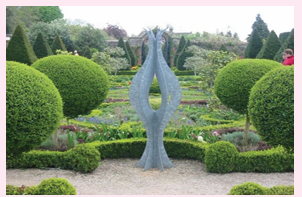 Symmetrical plants in the garden |
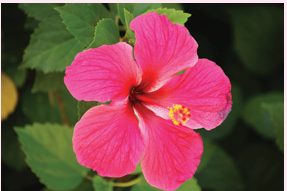 |
Rotational Symmetry in Hibiscus flower |
|
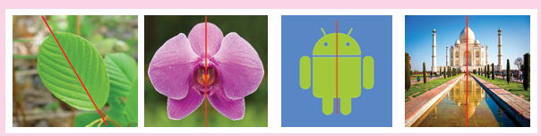
In the given figures, the red coloured line divides each figure into two equal halves and suppose we fold them along that line, we will see that one half of each figure exactly coincides with the other half. Such figures are symmetrical about that line and that line is called the line of symmetry or the axis of symmetry.
Look at the given invitation cards, the fold line of the first card divides it into two equal halves and each half exactly coincides. Hence it is a line of symmetry but in the second card, the fold line does not divide it into two equal halves. So,it is not a line of symmetry.
A figure may have one, two, three or more lines of symmetry or no line of symmetry.
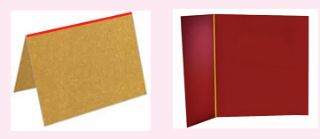
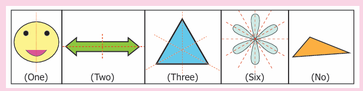
Think
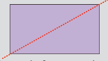
The diagonal of a rectangle divides it into two equal halves but it is not a line of symmetry Why?
Note
The line of symmetry can be vertical, horizontal or slant
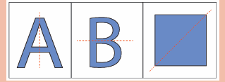
The word symmetry, comes from the Greek word symmetros, which means, having a common measure.
Some examples for Symmetry
Symmetry can be found anywhere in nature as well as in man made objects. A few of them are leaves, insects, flowers, animals, note books, bottles, architecture, designs and shapes, etctera.
We observe a few symmetrical things in our surroundings as follows.
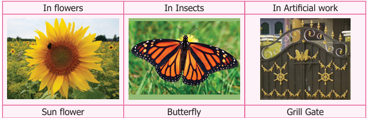
,Symmetry in Kolams
In Tamilnadu, our people usually decorate their corridors by beautiful kolams using rice flour. Those kolams look beautiful as most of them are symmetrical.
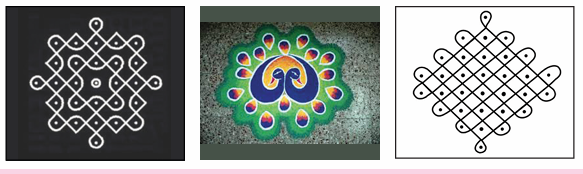
Try these
1) Is the dotted line shown in each figure a line of symmetry? If yes put tick mark otherwise put, wrong, into. Justify your answer.
![Image, The first image is a face of a human with a red vertical line, The second image is on trapezium with horizontal parallel line having a red line, is quarter posits horizontally. The third picture shows that the restricted area Symbol with a red slant line along the symbol. The fourth image is a crescent moon with open mouth ended along the right side and a vertical red line along the right siden ends of the Crescent. The fifth image is a rectangular box with a red horizontal line with two eg Small Squares placed on its both sides horizantally. The sixth image is a number six with a vertical](images/image183.png)
2) Check the following figures for symmetry? Write YES or NO
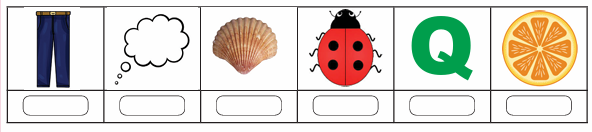
Example 1
Draw the lines of symmetry for the given figures and also find the number of lines of symmetry
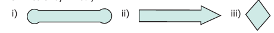
Solution:
Serial Number |
Draw the line of symmetry |
Number of lines of symmetry |
1) |
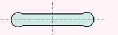
|
Number of lines of symmetry, two |
2) |
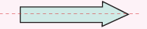 |
Number of lines of symmetry, one
|
3) |
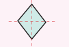 |
Number of lines of symmetry, two,
|
Example 2
Draw the lines of symmetry for each of the letters in the word R H O M B U S and also find the number of lines of symmetry. Open bracket, Note Here the letter O,is in circle shape.close bracket,
Solution
![Image, The first image is the albhabat, R, alone. number of lines of symmetry.zero The second image is the alphabet, H, with both vertical line exadly divided in the centre. number of lines of symmetry. two The third image is the alphabet O with many red lines passing through its centre. number of lines of symmetry.infinite, The fourth image is the alphabet, M, with one vertical line is the alphabet M with one vertical line at the centre. number of lines of symmetry, one, The fifth image is the alphabet, B, with one vertical line is the alphabet B with one hohzontal line at the centre. number of lines of symmetry.one, The sixth image is the alphabet, U with one vertical line at the centre. number of lines of symmetry.one, The seventh image is the alphabet, S done. number of lines of symmetry.zero,](images/image189.png)
Example 3
Draw the lines of symmetry for an equilateral triangle, a square, a regular pentagon and a regular hexagon and also, find the number of lines of symmetry.
Solution
1) 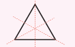
An equilateral triangle has 3 lines of symmetry
|
2) 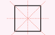
A square has 4 lines of symmetry
|
3) 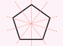
A regular pentagon has 5 lines of symmetry
|
4) 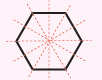
A regular hexagon has 6 lines of symmetry |
Note
The number of lines of symmetry of each regular polygon, open bracket, a closed figure having equal sides and equal angles, close bracket, is equal to its number of sides.
Try These
1) Draw the following figures in a paper. Cut out each of them and fold so that the two parts of each figure exactly coincide.
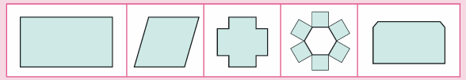
1) Which of the above figures have one, two or more lines of symmetry?
2) Which of the above figures do not have any line of symmetry?
2) Write the numbers from zero to 9.
1) Which numbers have a line of symmetry?
2) List out the numbers which do not have a line of symmetry
Example 4
Complete the other half of the following figures such that the dotted line is a line of symmetry.
Solution
Activity
Complete the other half of the following figures such that the dotted line is the line of symmetry
Standing in front of a mirror, Kumaran was getting ready to celebrate his birthday. He noticed a beautiful sentence I LOVE MOM written on his T shirt which was presented by his uncle.
In these words, he saw I and MOM were looking the same in the mirror. But the word LOVE did not appear the same. It looked as .
Out of curiosity, he took out some alphabet cards and started checking which of the alphabets would look the same in the mirror. He found a few alphabets A, H, and I, look the same in the mirror, because they have lines of symmetry.
Already we know that a line of symmetry divides the figure into two equal halves. When you keep a mirror along the line of symmetry the other half of the figure gets reflected by the mirror and it looks the same. This is known as reflection symmetry or mirror symmetry
Think
Which other capital letters of English alphabets look like the same in the mirror?
Note
A shape has reflection symmetry if it has a line of symmetry.
When an object is seen in a mirror, the image obtained on the other side of the mirror is called its reflection. The following figure shows the reflection of the English alphabet A. Let us assume that there is a line between, A, and its image in the place of a mirror.
We observe that an object and its mirror image are symmetrical with reference to the mirror line. If the paper is folded, the mirror line becomes the line of symmetry.
Note
The object and its image will lie at the same distance from the mirror.
The only difference is that the left side is on the right and vice versa
Example 5
Assuming one shape is the reflection of the other, draw the mirror line for each of the given figures.
Solution
Example 6
Draw the reflection image of the following figures about the given line.
Solution

Example 7
What words will you see if a mirror is placed below the words MOM, COM, HIDE and WICK?
Example 8
Colour any one box in the given grid sheet so that it has reflection symmetry and draw the lines of symmetry.
Solution
Example 9
In the given figure first reflect the shaded part about the line ‘l’ and then reflect it about the line ‘m’.

Activity
Symmetrical figures by ink blots
Step 1 Take a sheet of paper and fold it into half to make the crease.
Step 2 Put some ink blots on one side of the crease of the paper.
Step 3 Fold the paper along the crease and press it.
Step 4 Open the paper, you will find an imprint of the ink blots on the other part also which is symmetrical about the crease
Try these
1) Find the password
Kannukkiniyal has a new game app in her laptop protected with a password. She has decided to challenge her friends with this paragraph which contains that password".
If you follow the steps given below, you will find it. Steps:
1) Write the above paragraph in capital letters.
2) Turn that paper upside down and look at it in the mirror.
3 ) The word which remains unchanged in the mirror is the password.
2) Form words using the letters B, C, D, E, H, I, K, O and X. Write those words in paper in capital letters. Turn it upside down and look at them in the mirror.
1) List the letters which have horizontal and vertical line of symmetry.
2) Do the words HIKE, DICE, COOK remain unchanged in the mirror?
3) The words which you have found that remain unchanged in the mirror are desh.
4 point 4 Rotational Symmetry
We have already learnt about rotation. Rotation means turning around a center. The paper windmill, merry go round, fan, tops, wheels of vehicles, fidget spinner are few examples of rotating objects that we see in our life.
When one rotation is completed, the rotating object comes back to the position where it started. During a complete rotation, the object moves through 360°.
Think about the situation
1) Take two rectangular biscuits from the same packet and put one on the other. Holding one biscuit firmly rotate the other on it about the center.
How many times does it fit exactly on the other in a complete rotation? Two times.
2) In the example given below, if you rotate the fidget spinner about the center, there are three positions in which the fidget spinner matches exactly the same in a full rotation
3) place a set a square open bracket, . Containing angles sixty degree,thirty degree, and ninty degree, close bracket, on paper and drawn an outer line around it what type of trangle do you get ? yes scalence triangle. If you rotate it about the centre, there is only one position in which the set square fits exactly in side the outer line.
In the above situations 1 and 2, the total number of times the rectangular biscuit and the fidget spinner matches exactly with itself in one complete rotation is 2 and 3 respectively. This is called the order of rotational symmetry. In situation 3, the set square matches itself only once in one complete rotation and hence has no rotational symmetry.
An object is said to have a rotational symmetry if it looks the same after being rotated about its centre through an angle less than 360°, open bracket If the order of rotation of an object is atleast two, close bracket,.

Think
Can you identify the object which does not have rotational symmetry in the above situations? Why?
Example 10
A manhole cover of a water sump is in square shape.
1) In how many ways we can fix that to close the sump?
2) What is its order of rotational symmetry?
1) We can fix it in 4 ways as shown above.
2) The order of rotational symmetry is 4.
Think
Suppose, the man hole cover of the water sump is in circular shape.
1) The number of ways to close that circular lid is desh
2) What is its order of rotational symmetry?
Activity
Find the order of rotational symmetry by fixing the relevant shape in different ways.
Example 11
Find the order of rotation for the following figures.
Solution
Example 12
Find the order of rotation for the following shapes.
Example 13
Join six identical squares so that at least one side of a square fits exactly with any other square and have rotational symmetry (any three ways).
Solution

The opening in the given spanner has six sides, so it is a hexagon. The spanner has rotational symmetry of order 6 and fits a hexagonal bolt in any of six positions.
Look at the following figures
Here a particular pattern or design continued throughout. The pattern changes its place without rotation or reflection. The exact image is found without changing its orientation.
Thus, translation symmetry occurs when a pattern slides to a new position. The sliding movement involves neither rotation nor reflection.
Translation symmetry in art. |
A chess board is seemed to follow translation of black and white squares |
Example 14
Which pattern is translated in the given kolams?
Solution
Example 15
Using the given pattern, colour and complete the boxes in such way that it translation symmetry.
solution
Example 16
Translate the given pattern and complete the design in the rectangular strip
Solution
![image, 1) The image has five different coloured circle, in where four are placed in four corners with one at its centre also, there is a ninja blade near by this, the pattern repeated seven times 2) The image has two triangles, at north and south direction whose vertex facing each other also in the east and west direction, there is double lined arrow of different colours facing towards it, second pattern repeated six times, 3) There is two image of Four different colour, diamond in four directions with small circle at the centre green Colour rectangle, where two dots are placed on the right side , inner part of the rectangle, third pattern repeated seven times.](images/image236.png)
Symmetry
Expected Outcome
Step 1 Open the Browser by typing the URL Link given below (or) Scan the QR Code. GeoGebra work sheet named Symmetry, will open. There are two worksheets under the title Line of Symmetry and Rotational Symmetry. In the Line of Symmetry drag the points on left side of both the figures and click reflect to see full figure
Step 2 In Rotational Symmetry click on New Shape and find the order of rotational symmetry. Type your answer in the box and hit enter key to see whether your answer is right.
Browse in the link: Symmetry: https://ggbm.at/udcrmzyror Scan the QR Code.
1) The reflected image of the letter q, is desh
2) A rhombus has desh lines of symmetry.
3) The order of rotational symmetry of the letter z, is desh
4) A figure is said to have rotational symmetry, if the order of rotation is atleast desh
5) desh symmetry occurs when an object slides to new position.
2) Say True or False
1) A rectangle has four lines of symmetry.
2) A shape has reflection symmetry if it has a line of symmetry.
3) The reflection of the name RANI is I N A, R, is rotated left angle
4) Order of rotation of a circle is infinite.
5) The number 191 has rotational symmetry.
3) Match the following shapes with their number of lines of symmetry.
1) Square 2) Parallelogram 3) Isosceles triangle 4) Rectangle |
a) No line of symmetry b) One line of symmetry c) Two lines of symmetry d) Four lines of symmetry |
4) Draw the lines of symmetry of the following.
5) Using the given horizontal line / vertical line as a line of symmetry, complete each alphabet to discover the hidden word.
![image, 1) The given iimage has a horizontal line, which divides the upper case of the alphabets, D,E, C, O, D, and E. (2) The given iimage has a horizontal line, which divides the upper cave of the alphabets K, I, c, and k. (3) The given image has a horizontal line, which divides the upper case of the alphabets B, E and D. (4) The given image has a Vertical line,which divides,the upper case of the alphabets W, A and y. (5) The given image has a vertical line which divide the upper case of the alphabets M, A, T. and H. (6) The given image has a vertical line,which divides the upper case of the alphabets T.O.M.A.T and o.](images/image242.png)
6) Draw a line of symmetry of the given figures such that one hole coincide with the other hole(s) to make pairs.
![image, 1) The first image is green colour square in the in which two dots. are left and right side inner part. 2) The second image, is a green colour square in which two dots arer placed on the right Corner opposite to each other, 3) The third image is a gree colour rectangle where two dots are placed on the right side middle, inner part of the rectangle, (4) The fourth image is a green colour rectangle, where two dots are placed on the left side, middle inner port, and again two dot s where Placed on the right side corners. 5) The fifth image as a green colour circle, where first dot is placed, exactly to the north, second dot east a placed exactly east, in the third and fourth dot are placed, in the South, were direction inside the circumference of the circle.](images/image243.png)
7) Complete the other half of the following figures such that the dotted line is the line of symmetry.
8) Find the order of rotation for each of the following.
9) A standard die has six faces which are shown below. Find the order of rotational symmetry of each face of a die?
10) What pattern is translated in the given border kolams?
11) Which of the following letter does not have a line of symmetry?
a) A
b) P
c) T
d) u
12. Which of the following is a symmetrical figure ?
13) Which word has a vertical line of symmetry?
a) DAD
b) NUN
c) MAM
d) EVE
14) The order of rotational symmetry of eight hundred and eighteen, is desh
a) 1
b) 2
c) 3
d) 4
15) The order of rotational symmetry of is desh
a) 5
b) 6
c) 7
d) 8
Miscellaneous Practice Problems
1) Draw and answer the following.
1) A triangle which has no line of symmetry
2) A triangle which has only one line of symmetry
3) A triangle which has three lines of symmetry
2) Find the alphabets in the box which have
1) No line of symmetry
2) Rotational symmetry
3) Reflection symmetry
4) Reflection and rotational symmetry
3) For the following pictures, find the number of lines of symmetry and also find the order of rotation
![image, 1) The given image, has six green colors a square blocks , where three blocks, are placed and One, above the other vertically, and other three blocks, are arranged in the same Manner, and is attached to the right side, of the second previous block. (2) The given Image, is grean Colour isosceles triangle, (3 ) the given image, is a green colour , rectangular bar, which is divided into, fire aquale parts, (4) The given image, is a green colour, circle, Inside which a square is placed, where another square is rotated through forty five degree, and is placed above the previou Square](images/image251.png)
4) The three digit number, one hundred and one, has rotational and reflection symmetry. Give five more examples of three digit numbers which have both rotational and reflection symmetry.
5) Translate the given pattern and complete the design in rectangular strip?
Challenge Problems
6) Shade one square so that it possesses
1) One line of symmetry
2) Rotational symmetry of order 2
7) Join six identical squares so that atleast one side of a square fits exactly with any other side of the square and have reflection symmetry (any three ways).
8) Draw the following
1) A figure which has reflection symmetry but no rotational symmetry.
2) A figure which has rotational symmetry but no reflection symmetry.
3) A figure which has both reflection and rotational symmetry.
9) Find the line of symmetry and the order of rotational symmetry of the given regular polygons and complete the following table and answer the questions given below.
Shape |
Equilateral triangle
|
Square |
Regular pentagon |
Regular hexagon |
Regular octagon |
Number of lines of symmetry |
Equilateral triangle, M t cell |
Square, M t cell |
Regular pentagon, M t cell |
Regular hexagon, M t cell |
Regular octagon, M t cell |
Order of rotational symmetry |
Equilateral triangle,
M t cell |
Square, M t cell |
Regular pentagon, M t cell |
Regular hexagon, M t cell |
Regular octagon, M t cell |
1) A regular polygon of 10 sides will have desh lines of symmetry.
2) If a regular polygon has 10 lines of symmetry, then its order of rotational symmetry is desh
3) A regular polygon of 'n' sides has desh lines of symmetry and the order of rotational symmetry is desh
10) Colour the boxes in such a way that it posseses translation symmetry.
The line that divides any figure into two equal halves such that each half exactly coincides with the other is known as the line of symmetry or axis of symmetry.
A shape has reflection symmetry if it has a line of symmetry.
An object is said to have a rotational symmetry if it looks the same after being rotated about its centre through an angle less than three sixty degree.
The total number of times a figure coincides with itself in one complete rotation is called the order of rotational symmetry.
Translation symmetry occurs when an object slides to a new position. The sliding movement involves neither rotation nor reflection.

To perceive iterative processes and patterns
To see Euclid’s game as an iterative process.
To learn to devise and follow algorithms.
To learn the advantage of ordering information.
Everyday morning, waking up, brushing teeth, doing physical exercise, drinking milk, having bath, having breakfast and then getting ready to school are some of the activities we do.
Everyday such activities happen. Don't they?
Do we see a pattern getting repeated? In our life, there are many such repeating patterns. In fact, EAT STUDY, PLAY, SLEEP, is a pattern repeated daily, isn’t it?
When we go on doing same activities again and again, it gives rise to a new form.
Let us see some more examples for repeated processes.
We can see that some patterns are getting repeated in kolams, so as to get larger kolams
In the construction of a wall, a mason places the bricks one upon another and adds plaster to them in an organized manner repeatedly. After some days we can see that a nice wall is getting constructed.
Bees make hives which are formed by the increasing pattern of hexagons where they can store optimum amount of honey and feed themselves during winter.


Take a bottle of red paint, add a little bit of green paint to it. The change in colour cannot be seen immediately. Add a little more, now, you can see a slight change in the colour. A little more , Hey don’t you see a different colour now? You add green paint drop by drop to red paint, you finally get a new colour. The activities explained above follow iterative processes.

Hence, an iterative process is a procedure that is repeated many times which gives rise to a new form.
MATHEMATICS ALIVE – INFORMATION PROCESSING IN REAL LIFE |
|
Fibonacci sequence in nature |
Orderly arrangement of fruits in the shop |
Orderly arrangement of fruits in the shop
The above iterative processes can be seen in our daily life. It can be seen in number sequences also. The numbers may increase or decrease following a pattern.
1) Observe the following sequences and the pattern that generates each one of them.
The sequence 1, 3, 5, 7, is generated by the pattern 1, 1 plus 2, 3 plus 2, 5 plus 2.
The sequence 50, 48, 46, 44, is generated by the pattern 50, 50 minus 2, 48 minus 2, 46 minus 2.
The sequence 2, 4, 6, is generated by the pattern one into 2, 2 into 2 ; 3 into 2,
The sequence 1, 4, 9, 16 is generated by the pattern 1 into 1, 2 into 2 , 3 into 3.
The sequence 2, 6, 12, 20, 30, is generated by the pattern 1 into 2, 2 into 3, 3 into 4, 4 into 5,
The sequence 2, 4, 8,16, is generated by the pattern 2 into 1, 2 into 2, 2 into 2 into 2.
2) Observe the pattern, 1, 10, hundred, When the number of zeros increase the value also increases.
3) In the same way, can you guess the next number in the special number sequence given below
1, 1, 2, 3, 5, 8, 13, 21, 34, desh
Yes it is 55, how? You have got it by adding 21 and 34. Haven’t you? Are you able to recognize the pattern in the above sequence? Yes, if we add the previous two consecutive terms, we get the next term as
1 plus 1 is equal to 2, 1 plus 2 is equal to 3, 2 plus 3, is equal to, 5, 3 plus 5, is equal to, 8, 5 plus 8 is equal to 13,
This special pattern of numbers is called the Fibonacci sequence. Each term in the Fibonacci sequence is called, a, Fibonacci number
4) Lucas numbers form a sequence of numbers like the Fibonacci numbers and they are closely related to the Fibonacci numbers. Instead of starting with 1 and 1, Lucas numbers start with 1 and 3. The Lucas sequence is 1, 3, 4, 7, 11, 18, 29, 47, 76, hundred and twenty three, In all the above patterns of numbers, we can see the iterative processes.

Try these
1) Find the tenth term of the Fibonacci sequence.
2) If the elventh term of the Fibonacci sequence is 89 and thirteenth term is two hundred and thirty three, then, what is the 12th term?
Fibonacci numbers in nature,
We come across the existence of Fibonacci sequence in many natural phenomena like spiral in a shell, arrangement of petals in flowers, branches of a tree, seeds in the head of a sunflower, petals on a daisy, the cells in the bee hive, etcetera. Mathematical patterns are found in the distinct marking on animals and the structure of seashells also.

Note
We can also begin the Fibonacci sequence with zero and 1, instead of 1 and 1.

Golden Ratio: Consider the ratio of successive Fibonacci
numbers 3 divided by 2 is equal to one point five,
5 divided by 3 is equal to 1 point six six ,
8 divided by 5 is equal to 1 point 6
13 divided by 8 is equal to 1 point six, two, five, ,
21 divided by 13 is equal to 1 point six,one, five, three,
you can see the pattern, getting closer to 1 point , six, one, eight, and that is denoted by pi called the Golden Ratio open bracket, pi is equal to 1 point six, one, eight,close bracket. It is observed that shapes having Golden Ratio appear beautiful.
Think
Are two consecutive Fibonacci numbers relatively prime.
The Portrait of Mona Lisa has Fibonacci spiral pattern. This is one of the reasons for the enhanced beauty of Mona Lisa.


Ammu and Balu are playing a game. Each one can choose any number and they write it down on a piece of paper. If Ammu picks up the number greater than what Balu picked up, then Ammu will find the difference of the two numbers. That difference will be shown to Balu. Now Balu takes the chance to find the difference between the number what he has and the number shown to him by Ammu. They will continue the process until the difference and the numbers they have become equal. Finally, the person who gets the number equal to the difference wins the game Let us see how it works.
Ammu |
(34,19) |
34 minus 19 is equal to 15. |
Balu |
(19,15) |
19 minus 15 is equal to 4. |
Ammu |
(15, 4) |
15 minus 4 is equal to 11. |
Balu |
(11, 4) |
11 minus 4 is equal to 7 |
Ammu |
(7, 4) |
7 minus 4 is equal to 3. |
Balu |
(4, 3) |
4 minus 3 is equal to 1. |
Ammu |
(3, 1) |
3 minus 1 is equal to 2 |
Balu |
(2, 1) |
2 minus 1 is equal to 1. |
Ammu |
(1, 1) |
same numbers |
Suppose Ammu picked the number 34 and Balu picked the number 19. Ammu first finds the difference between 34 and 19 which gives 15. She shows the difference to Balu. Now Balu has 19 and she has 15, the difference is 4. He shows to Ammu and so on. (the bigger number should be kept first to find the difference). So Ammu wins.
Now suppose they start with Ammu (24, 18)
It goes, open bracket, 24, 18, close bracket, right arrow, Ammu open bracket, 18, 6, close bracket, right arrow, Balu open bracket, 12, 6 close bracket, right arrow, Ammu open bracket, 6, 6 close bracket, If they start with Ammu open bracket, 18, 6 close bracket, we get open bracket, 18, 6 close bracket, right arrow, Ammu wins again open bracket, 12, 6 close bracket, right arrow, open bracket, 6, 6 close bracket, Balu wins,
Play the game with your friends and see for which pairs of numbers the first player open bracket Ammu close bracket, wins, and when the second player wins.
Now we can notice something interesting! Begin with any pair of numbers. Can you say anything about the pair of numbers. Remember that we stop the process when both the numbers are same. It is the Highest Common Factor (HCF) of the two numbers we started with. So what we have seen here is an iterative process which leads us to the HCF of two given numbers. The HCF of a and b open bracket here a greater than b close bracket, is the same as, for a, and a, minus b.
Example 1
Find the HCF of two numbers Sixteen and eighteen
Solution
Now the HCF of Sixteen, twenty eight, Now the HCF of open bracket 16, 28 minus 16 close bracket,
16 is equal to 2 into 2 into 2 into 2
28 is equal to 2 into 2 into 7
HCF of (16, 28) is equalto, 2 into 2 is equal to 4
16 is equal to 2 into 2 into 2 into 2
12 is equal to 2 into 2 into 3
HCF of (16, 12) is equalto, 2 into 2 is equal to 4
Therefore HCF of (16, 28) is equalto, HCF of (16, 28 minus 16). Hence, HCF of two numbers a and b, a greater than b, is same as the HCF of a, and a, minus b.
Euclidean algorithm
Let us take a number 12.
If we divide 12 by 7 then, we get quotient is equal to 1, remainder is equal to 5 and 12 can be written as 12 is equal to open bracket of 1 into 7, close bracket, plus 5.
If we divide 12 by 2 then, we get quotient is equal to 6, remainder is equal to zero, and 12 can be written as 12 is equal to open bracket of 2 into 6 close bracket, plus zero.
From this, we observe that, if a number a, is divided by some number b, then we get the quotient q, and remainder r, and ‘a’ can be written in a unique way as a is equal to open bracket of b, into q, plus r.
That is, Dividend is equal to, open bracket of, Divisor into Quotient close bracket, plus Remainder. This is called the Euclidean algorithm.
Do you know the robot game? One child acts as a robot. Another child gives instructions to the child enacting as robot. The robot child should follow instructions. If the robot child stands at the wall by facing it, the instructor has to say, move forward. The robot child can only try to move forward, but can not The robot child cannot say it is not possible. This humorous activity shows that instructions are mechanically followed by robots. Unlike robots, human brain is capable of thinking and modifying algorithms based on situations


Think about the situation
Recipe for preparing lemonade for a group of 6 members.
Squeeze 3 half lemons in a bowl.
Add 5 glasses of normal water into the bowl.
Add 4 teaspoons of sugar into the lemon juice.
Stir the content well.
Filter the content.
Pour the filtered content into 6 glasses and serve.
Using the above instructions, prepare lemonade for 12 members, 24 members and 3 members.
Example 2
Follow the instructions in the given puzzle to arrive at the same number (36). Instructions
Think of a number from 1 to 9.
Multiply it by 9.
If you have two digit number, add the digits together.
Subtract 3 from the answer.
Multiply the number by itself.
Solution
Let us take a number, 6
Multiply it by 9, 9 into 6 is equal to 54
Add the digits together, 5 plus 4 is equal to 9
Subtract 3 from the answer, 9 minus 3 is equal to 6
Multiply the number by itself, 6 into 6 is equal to 36
Try for number other than 6.
Example 3
Solution

You need to read the instructions carefully before filling the OMR sheet. The given OMR sheet is shaded based on the following instructions.
Instructions
Observe the enrolment number written on the top row.
The digits are to be shaded from left to right.
Shade the corresponding bubbles under each of the number boxes.
Only one digit is to be shaded in each column.
Use only ball point pen for shading the bubbles.
This activity is very important as children need to fill OMR for various examinations like NAS, N M M S.
Example 4

Observe the given 4 into 4 square grid and follow the instructions given below to appreciate the uniqueness of the arrangement of numbers that gives the total, hundred and thirty nine,.
Instructions
Add the numbers horizontally.
Add the numbers vertically.
Add the numbers diagonally.
Add the numbers in the four corners of the square
Divide the square into four 2 into 2 squares and add all the numbers in each of the squares.
Each of the above instructions gives the same answer. Doesn’t it? In all the above examples, we note that delivering instructions as well as following them are interesting
Try these
1) The teacher should give oral instructions to the students to draw the geometrical figure already drawn by him slash, her.
1) Draw a square. In the middle of the square, draw a circle in such a way that the circle does not touch any side of the square. Divide the circle into four equal parts. Shade the bottom right part of the circle. Ask the students to show that figure drawn by them.
2) Draw a triangle on a piece of paper. Make it crazy looking by adding some features. Give instructions to your friend to draw it exactly the same.
3) Suppose your friend wants to come to your house from his slash, her house. Give clear instructions in order, to reach your house.

In day to day life, sorting things such as arranging books on shelves, lining up foot wears in racks, segregating vegetables in trays, keeping household things in an almirah, arranging provisions in a cupboard, listing out expenditure etcetera, become inevitable. These activities help us to recall the things available, to have an easy access, avoid wastage and so on. Similar kind of arrangements are available in numbers also.
Example Calendar

Discuss the following situations in groups
Situation 1
Suppose you need to arrange hundred books of same size in a shelf. The shelf has 10 rows and each row can accommodate 10 books. Besides, each book has an ID number written on it. How will you arrange the books based on their ID numbers, the smallest number should be on the left top row and the greatest ID number must on the right bottom row.
Discuss the following questions
1) Are there different ways to arrange the books?
2) How do you know that one method is better than the other?
3) If two persons together do the arrangement, how will you divide the work between them?
4) If the books do not have any numbers written on them, how will you arrange them?
5) Is arranging them by number better than arranging them by size? why?
Situation 2
Suppose you have saved some coins in your piggy bank. If you want to know the amount saved, what can you do?
1) What are the ways to count the amount?
2) Which is the easy way to count?
3) Can the coins be arranged by their value?

Situation 3
Have you seen the garbage being sorted out in the streets? Some materials are bio degradable and some are not bio degradable like hospital wastes, plastics, glass materials and other wastes. How are the garbages sorted?

Note
The teacher may discuss this with students to create more awareness on segregating of waste, at the source.
Example 5
Observe the calendar showing the month of January two thousand nineteen.

Answer the following questions
1) Sort out the prime and composite numbers from the calendar.
2) Sort out the odd and even numbers.
3) Sort out the multiples of 6; multiples of 4; the common multiples of 4 and 6 and LCM of 4 and 6.
4) Sort out the dates which fall on Monday
Solution
1) Prime numbers is equal to, 2, 3, 5, 7, 11, 13, 17, 19, 23, 29, 31
2) Composite numbers is equal to, 4, 6, 8, 9, 10, 12, 14, 15, 16, 18, 21, 22, 24, 25, 26, 27, 28, 30
3) Odd numbers is equal to, 1, 3, 5, 7, 9, 11, 13, 15, 17, 19, 21, 23, 25, 27, 29, 31
Even numbers is equal to, 2, 4, 6, 8, 10, 12, 14, 16, 18, 20, 22, 24, 26, 28
3) Multiplies of 6 is equal to, 6, 12, 18, 24, 30
Multiplies of 4, is equal to, 4, 8, 12, 16, 20, 24, 28
Common multiples is equal to, 12, 24
LCM is equal to, 12
4) Monday falls on , is equal to, 7,14,21,28
Information Processing
Expected Outcome

Step 1
Open the Browser by typing the URL Link given below (or) Scan the QR Code. GeoGebra work sheet named Information Processing” will open. There is a worksheet under the title Fibonacci Sequence.
Step 2
Move the sliders to move Red point vertically and horizontally along the numbers and check how Fibonacci sequence is formed.


Browse in the link
Information Processing: https://ggbm.at/dfktdr6k or Scan the QR Code.

1) Study and complete the following pattern
1) 1 into 1 is equal to 1
11 into 11 is equal to 121
One hundred and eleven, into One hundred and eleven, is equal to, twelve thousand three hundred and twenty one,
One thousand, hundred and eleven, into thousand, One hundred and eleven is equal to ?
Eleven thousand, hundred and eleven, into, Eleven thousand, hundred and eleven, is equal to ?
2)

(Hint: 3 plus 6 is equal to 9, 9 plus 12 is equal to 21)
2) Find next three numbers in the following number patterns.
1) 50, 51, 53, 56, 60, desh
2) 77, 69, 61, 53, desh
3) 10, 20, 40, 80, desh
4) 21 divided by 33, three hundred and twenty one, divided by four hundred and forty four, four thousand three hundred and twenty one, divided by five thousand five hundred and fifty five, desh
3) Consider the Fibonacci sequence 1, 1, 2, 3, 5, 8,13, 21, 34, 55, Observe and complete the following table by understanding, the number pattern followed. After filling the table discuss the pattern followed in addition and subtraction of the numbers of the sequence,
Steps |
Pattern 1 |
Pattern 2 |
Steps , 1) |
Pattern 1, 1 plus 3 is equal to 4 |
Pattern 2, 5 minus1 is equal to 4 |
Steps , 2) |
Pattern 1, 1 plus 3 plus 8 is equal to desh |
Pattern 2, Question Mark |
Steps , 3) |
Pattern 1, 1 plus 3 plus 8 plus 21 is equal to desh |
Pattern 2, Question Mark |
Steps , 4) |
Pattern 1, Question Mark |
Pattern 2, Question Mark |
4) Complete the following patterns.
|
|
|
5) Find HCF of the following pair of numbers by Euclid’s game.
1) 25 and 35
2) 36 and 12
3) 15 and 29
6) Find HCF of 48 and 28. Also find the HCF of 48 and the number obtained by finding their difference.
7) Give instructions to fill in a bank withdrawal form issued in a bank.
8) Arrange the name of your classmates alphabetically.
9) Follow and execute the instructions given below.

1) Write the number 10 in the place common to the three figures
2) Write the number 5 in the place common for square and circle only.
3) Write the number 7 in the place common for triangle and circle only.
4) Write the number 2 in the place common for triangle and square only.
5) Write the numbers 12, 14 and 8 only in square, circle and triangle respectively.
10) Fill in the following information
Candidate’s EMIS Number

1) Name of the candidate in Capital Letters followed by initial leaving one box blank. (Do not write Miss/Master)


3) Father’s name in Capital Letters followed by initial leaving one box blank. (Do not write Mr./Dr./Prof)

4) Mother’s Name in Capital Letters followed by initial leaving one box blank. (Do not write Mrs./Dr./Prof)
5) Sex (Put mark)

6) Area to which candidates resides. (Put mark)

11) The next term in the sequence 15, 17, 20, 22, 25, is
a) 28
b) 29
c) 27
d) 26
12) What will be the 25th letter in the pattern? A B C A A B B C C A A A B B B C C C,
a) B
b) C
c) D
d) A
13) The difference between 6th term and 5th term in the Fibonacci sequence is
a) 6
b) 8
c) 5
d) 3
14) The 11th term in the Lucas sequence 1, 3, 4, 7, is
a) 199
b) 76
c) 123
d) 47
15) If the HCF of 26 and 54 is 2, then HCF of 54 and 28 is.
a) 26
b) 2
c) 54
d) 1
Exercise 5 point 2
Miscellaneous Practice problems
1) Find HCF of hundred and eighty eight and two hundred and thirty, by Euclid's game.
2) Write the numbers from 1 to 50. From that find the following.
1) The numbers which are neither divisible by 2 nor 7.
2) The prime numbers between 25 and 40.
3) All square numbers upto 50.
3) Complete the following pattern,
1) 1 plus 2 plus 3 plus 4 is equal to 10
2 plus 3 plus 4 plus 5 equal 14
dash plus 4 plus 5 plus 6 is equal to dash
4 plus 5 plus 6 plus dash is equal to dash
2) 1 plus 3 plus 5 plus 7 is equal to 16
dash plus 5 plus 7 plus 9 is equal to 24
5 plus 7 plus 9 plus dash is equal to dash
7 plus 9 plus dash plus 13 is equal to dash
3) A,B, D,E,F, H,I,J, K, dash S,T,U,V,W,X,
4) 20, 19, 17, dash 10, 5
4) Complete the table by using the following instructions.
A It is the 6th term in the Fibonacci sequence.
B The predecessor of 2.
C LCM of 2 and 3.
D HCF of 6 and 20
E The reciprocal of 1 divided by 5 .
F The opposite number of minus 7.
G The first composite number.
H Area of a square of side 3 centi meter,
I The number of lines of symmetry of an equilateral triangle.
After completing the table, what do you observe? Discuss.

5) Assign the number for English alphabets as 1 for A, 2 for B up to 26 for Z.
Find the meaning of
7 |
15 |
15 |
4 |
13 |
15 |
18 |
14 |
9 |
14 |
7 |
6) Replace the letter by symbols as plus for A, minus for B, into for C and divided for D. Find the answer for the pattern 4B3C5A30D2 by doing the given operations.
7) Observe the pattern and find the word by hiding the numbers
1,H, 2, O, 3, W,
4, A, 5, R, 6, E,
7, Y, 8, O, 9, U,?
8) Arrange the following from the eldest to the youngest. What do you get?
A refers to parents
L refers to you
F refers to grandparents
I refers to elder sister
Y refers to younger brother
M refers to uncle
Challenge problems
9) Prepare a daily time schedule for evening study at home.
10) Observe the geometrical pattern and answer the following questions

1) Write down the number of sticks used in each of the iterative pattern.
2) Draw the next figure in the pattern also find the total number sticks used in it.
11) Find HCF of twenty eight, thirty five, fourty two, by Euclids game.
12) Follow the given instructions to fill your name in the OMR sheet.

The name should be written in capital letters from left to right.
One alphabet is to be entered in each box.
If any empty boxes are there at the end they should be left blank.
Ball point pen is to be used for shading the bubbles for the corresponding alphabets.
13) Consider the Postal Index Number (PIN) written on the letters as follows:
6, zero,4,5,0,6; 6, zero,4,5,1,6, 6, zero,4,5,6,0, 6, zero,4,5,0,6, 6, zero,4,5,1,6, 6, zero,4,5,1,6, 6, zero,4,5,6,0, 6, zero,5,1,6, 6, zero,4,5,0,5, 6, zero,4,4,7,0, 6, zero,4,5,1,5, 6, zero,4,5,2,0, 6, zero,4,3, zero,3, 6, zero,4,5, zero,9, 6, zero,4,4,7,0, . How the letters can be sorted as per Postal Index Numbers?
An Iterative process is a procedure that is repeated many times to give new results.
The Fibonacci sequence is 1, 1, 2, 3, 5, 8, 13, 21, 34,
If a number a, is divided by some number b, then we get the quotient q, and remainder r, and ‘a’ can be written in a unique way as a is equal to, open bracket of b, into q, close bracket, plus r. that is, Dividend is equal to open bracket of Divisor into, Quotient close bracket, plus Remainder. This is called the Euclidean algorithm.
Chapter 1 Fractions
Exercise 1.1
1) 14, 1 divided by four 2) Mixed Fraction, 3) 2, 1 divided by 6, 4) 16, 5) 1
2) 1) True, 2) False , 3) True , 4) True , 5) False
3) 1) 10 divided by 21, 2) 7, 1 divided by 2, 3) 7, 6 divided by 35 , 4) 38 divided by 63
5) 11 divided by 15, 6) 4, 2, divided by 21.
4) 1) 61 divided by 18, 2) 14 ,1 divided by 7, 3) 7, 5 divided by 6, 4) 109 divided by 9,
5) 1) 4, 2) 41, 2 divided by 3, 3) 3 divided by 10 , 4) 4
6) 1) 3 divided by 28, 2) 2, 2 divided by 5, 3) 1, 3 divided by 25, 4) 5, 4 divided by 5
7) 5 1 divided by 2 kilo gram, 8) 1, 1 divided by 4, litre, 9) 15, 3 divided by 4 kilo meter, 10) 7
11) d) 10 divided by grater then 9 divided by 10,
12) a) 13 divided by 63,
13) c) 17 divided by 53
14) a) 42
15)
c) 4 divided by 5, of rupees hundred and fifty,
Exercise 1.2
1) Rupees 510, 2) 3, 1 divided by 4 kilometer, 3) The difference between 2, 1 divided by 2, and 3, 2 divided by 3 is smaller
4) 10, 1 divided by 8, kilo gram,
5) 22 steps, 6) 4 divided by 8, and many answers, 7) 3, 2 divided by 3, 8) 6, 8 divided by 35, 9) 2 7 divided by 12, 10) 3, 11) 1 divided by 20, 1 divided by 30, 1 divided by 20 , 12) 1 divided by 8, 13) 15,
14. 1) 4, 1 divided by 4 kilo meter, 2) 5, 3 divided by 4 kilo meter, 3) Via Bus Stand 4) 6 times,
Chapter 2 Integers
Exercise 2.1
1) 1) minus 100, 2) minus 7, 3) left, 4) 11, 5 ) zero,
2) 1) True, 2) False, 3) False, 4) False, 5) True

4) 1) minus 3, 2 ) minus 2,
5) 1) minus 44, 2) plus 19 or 19, 3) 0, 4) 312 5) minus 789
6) 1) minus 15 kilo meter,
7) 1) Wrong, Integers are not continuously marked
2) Correct, Integers are correctly marked.
3) Wrong, Integer minus 2 is marked wrongly.
4) Correct, Integers are marked at equal distance.
5) Wrong, negative integers marked wrongly
8) 1) 8, 9, 2) minus 4, minus 3, minus 2, minus 1, zero, 1, 2, 3, 3) minus 2, minus 1, zero, 1, 2, 4) minus 4, minus 3, minus 2,
9) 1) minus 7 less than 8, 2) minus 8 less than minus 7, 3) minus nine hundred and ninty nine, greater than, minus thousand , 4) minus hundred and eleven is equal to minus hundred and eleven , 5) zero, greater than minus two hundred,
10) 1) minus 20, minus 19, minus 17, minus 15, minus 13, minus 11, 12, 14, 16, 18,
2) minus 40, minus 28, minus 5, minus 1, zero, 4, 6, 8, 12, 22,
3) minus thousand , minus hundred, minus 10, minus 1, zero, 1, 10, hundred, thousand
11) 1) 27, 15, 14, 11, zero, minus 9, minus 14, minus 17,
2) four hundred , 78, 65, minus 46, minus 99, minus hundred and twenty , minus six hundred,
3) seven hundred and seventy seven, five hundred and fifty five, three hundred and thirty three, one hundred and eleven, minus two hundred and twenty two, minus, four hundred and forty four, minus, six hundred and sixty six, minus eight hundred and eight eight,
12) c) 7, 13) a) 20, 14) d) minus 6, 15) c) minus 2 , 16) b) zero,
Exercise 2.2
1) 1) a sapling planted at a depth of 3 meter,
2 ) a pit which is 3m deep
2) 


3, 
4, 
5) 1) K, open backet, minus 1, close bracket, 2) minus 4, 3) 6, open backet minus 2, minus 1, zero, 1, 2, 3 close bracket, 4) open backet C,H close bracket, open backet E, J close bracket, 5) False, zero,
6) minus 3, 7, 7) minus 4 , minus 1,
8) No, as the number line number extends on both sides without any end, we cannot find the smallest (minus) and the largest ( plus ) number
9) 1) minus 10 degree celsious, 2) minus 5 degree celsious, 3) minus 20 degree celsious, 4) minus 15 degree celsious,
10) S, less than Q, less than zero, less than R, less than, P,
11) 1) 3, 2) minus 2, 3) minus 6, 4) minus 1, v) minus 5, 6) minus 4, 7) 4, 8) 4, 9) 5 , 10) 2,
12) C1, zero, C3, 2, C5, zero, C6, minus 4, C8, minus 8, C9: zero,
13) 1) plus 45, 2) zero , 3) minus 10 and minus, 20 , 4) False 5) the same
Chapter 3 Perimeter and Area
Exercise 3.1
1) 1) 26 Centimetre, 40 Centimetre, Square , 2) 14 Centimetre, 182 Centimetre, Square, 3) 15 Centimetre, two hundred and twenty five, Centimetre, Squar , 4) 12 meter , 44 Centimetre, 5 ) 5 feet, 18 feet
2) 1) 24 Centimetre, , 36 Centimetre, Square, 2) 25 meter, six hundred and twenty five Centimetre, Square,
3) 7 feet, 28 feet,
3) 1) four hundred Centimetre, Square 2) 8 feet, 3) 4 meter,
4) 1) 13 meter 2) 6 meter, 3) 8 feet,
5) 1) five hundred, 2) two lakh sixty thousand, 3) eighty lakh,
6) 1) 48 Centi metre, , 80 Centi metre, Square , 2) 36 Centi metre, 33 Centi metre, Square, 3) hundred and fifty Centi metre, three hundred and eighty Centi metre, Square,
7) 20 meter, 24 meter Square,
8) 32 Centi metre, , 64 Centi metre, , Square,
9) 24 feet, 24 Squar feet,
10) 1) 25 meter, 2) 27 Centi metre, , 3) 18 Centi metre,
11) 41 Centi metre, hundred and twenty two, Centi metre,
12) 10 meter, hundred, meter Squar
13) 12 Centi metre,
14) two hundred and fifty meter square, Rupees eleven thousand two hundred and fifty.
15) 54 Centi metre,
16. b) 
17) b) less than 60 Centimeter
18) c) 4 times
19) d) 3 times
20) c) Both the area and perimeter are changed
Exercise 3.2
1) 1) 9 Centi meter 2) 12 Centi meter 2) 114 Centi meter,
3) Rahim, 120 meter
4) 57 meter, two thousand four hundred and fifty one meter square,
5) Rupees four hundred.
6) 60 Centi meter
7) 8
8) 8 Centi meter , 24 Centi meter
9. 12, open bracket 1,23 close bracket, open bracket 2,22 close bracket, open bracket 3,21 close bracket, open bracket 4,20 close bracket, open bracket 5,19 close bracket, open bracket 6,18 close bracket , open bracket 7,17 close bracket , open bracket 8,16 close bracket , open bracket 9,15 close bracket , open bracket 10,14 close bracket , open bracket 11,13 close bracket , open bracket 12,12 close bracket
10) Perimeter of square B is twice that of square A ,
11) Area of the new square is reduced to 1/16 times to that of original area
12) Square plot by 4 meter square,
13) 102 Centi meter Square
14) 15 point 5 square units
Chapter 4 Symmetry
Exercise 4.1
1) 1) P, 2) Two, 3) Two , 4) Two, 5) Translation
2) 1) False, 2) True, 3) False, 4) True, 5) False,
3) 1) d, 2) a, 3) b, 4) c
4)

5) 1) DECODE, 2) KICK, 3) BED, 4) W A Y, 5) M A T H, 6) T O M A T O
6)

7) 
8) 1) 2 , 2) 2, 3) 4, 4) 8, 5) 2,
9) 1) 4, 2) 2, 3) 2, 4) 4, 5) 4, 6) 2
10)

11) b, p
13) c) MAM
14) b) 2
15) a) 5
Exercise 4.2
1) 1) Scalene triangle, 2) Isosceles triangle 3) Equilateral triangle
2) 1) P, N, S, Z, 2) I, O, N, X, S, H, Z, 3) A, M, E, D, I, K, O, X, H, U, V, W, 4 ) I, O, X, H
3) 1) 0, 2 ,2) 1, 0 , 3) 2, 2 , 4) 8, 8 , 5) 1, 0
4) hundred and eighty one , one hundred and eleven, eight hundred and eight, eight hundred and eighteen, eight hundred and eighty eight,
5)
![image, 1) The given image, has two dots , with fishes facing each Other, on both sides of the sand clock, which is repeated again five times as pattern. 2) The given image, has green colour rectangle ,where a Purple diamond, is placed inside the rectangle ,with a Small Orange colour, Circle ring, inside the rectangle, with a small orange colour cir cular ring , inside a diamond. which is repeated again six times, as pattern, 3) The given image is a green Colour diamond,and other image is a orange colour, diamond, which is repeated for three times as pattern,](images/image311.png)
6,


7)

8,

Many answers
3)
9) 9. 1) 10 2) 10 3) n, n
10) 1 

Chapter 5 Information Processing
Exercise 5.1
1) 1) 1,2, 3, 4, 3,2, 1 1,2,3,4,5,4,3,2,1,
2) hundred and forty four , 60, 84, 36, forty eight, 15, 27
2) 1) sixty five, seventy one, seventy eight,
2) 45, 37, 29,
3) hundred and sixty, three hundred and twenty, six hundred and forty,
4) fifty four thousand three hundred and twenty one, divided by sixty six thousand six hundred and sixty six, six lakh, fifty four thousand, three hundred and twenty one, divided by ,seven lakh seventy seven thounsand, seven hundred and seventy seven, seventy six lakh fifty four thousand three hundred and twenty one, divided by eighty eight lakh eighty eight thousand eight hundred and eighty eight,
3) 2) 12, 13 minus 1 1s equal to 12, 3) 33, 34 minus 1 is equal to 33, 4 ) 1 plus 3 plus 8 plus 21 plus 55 is equal to 88, 89 minus 1 is equal to 88
4,


5) 1 ) 5, 2 ) 12 , 3 ) 1
6) 4
9,

11) c) 27
12) a) B
13) d) 3
14) a) 199
15) b) 2
Exercise 5.2
1) 2
2) 1) 9, 11, 13, 15, 17, 19, 23, 25, 27, 29, 31, 33, 37, 39, 41, 43, 45, 47 ,
2 ) 29, 31, 37,
3) 1,4, 9, 16, 25, 36, 49
3) 3, 18, 7,
2) 3, 11, 32, 11, 40,
3) M, N, O, P, Q,
4) 1,4
4) A minus 8,
B, minus 1,
C minus 6,
D minus 2,
E minus 5,
F minus 7,
G minus 4,
H minus 9,
I minus 3
5) GOOD MORNING
6) 4
7) HOW ARE YOU?
8) FAMILY
10) 1) 3, 9, 18 2) 30

11) 7
13) six hundred and four, is common for all postal index numbers. Compare the remaining 3 digits, three hundred and three, four hundred and seventy, five hundred and five, five hundred and six, (two), five hundred and nine, five hundred and ten, five hundred and fifteen, five hundred and sixteen, (four), five hundred and twenty, five hundred and sixty, (Two)
Algorithm, vali murai, padi murai
Approximate, thoraayamaaka,
Area, parappalavu,
Ascending order, earuvarisai.
Asymmetrical, samassiirtra,
Axis of symmetry, samassiir accu,
Base, adippaakam,
Boundary, allai,
Breadth, agalam,
Closed figure,moodiya uruvam,
Combined shapes, kuuttu vadivangkaL,
Consecutive, aduththaduththa,
Descending order, irangku varisai,
Directed number, thisai en,
Distance, tholaivu,
Equilateral triangle,samapakka mukkooNam
Equivalent fraction, saana pinnam,
Estimated value, uththeesa mathippu,
Fraction, pinnam,
Fraction bars, pinna pattaikaL,
Golden ratio , thanga vikitham,
Half squares , aria sathurangaL,
Height, uyaram
Horizontal line, kidaimattak koodu,
Improper fraction, thakaa pinnam,
Inner boundary, utpura ellai,
Instruction, arivuruththuthal,
Integers, mulukkaL,
Inverse, ethirmarai nermaru
Irregular shapes, olungkatra vadivangkal,
Iterative pattern, thodar valar amaippu,
Iterative process , thodar valar seyal murai
Largest, mikapperiya
Length, niilam,
Like fraction, oorina pinnam,
Line of symmetry, samassiir koodu,
Measure, alavai,
Mixed fraction , kalappu pinnm,
Natural number iyal enn,
Negative integers, kurai mulukkal,
Negative number , kurai enn,
Non negative integers kuraiyarra mulukkal,
Number line, en koodu,
Opposite number, ethiren,
Outer boundary, velippura ellai,
Oval shape, neel vadivam,
Perimeter, sutralavu,
Positive integers, mikai mulukkal,
Positive number, mikai enn
Predecessor, munni,
Proper fraction, thaku pinnam,
Reciprocal , thalaikeli,
Rectangle, sevvakam,
Reflection, ethirolippu,
Reflection symmetry, ethrolippu samasseir,
Regular hexagon, olunku arukoonam
Regular pentagon, olungku ingookam,
Regular shapes, olunku vadivam,
Reshape, uru maatram,
Resize, alvu maatram,
Rhombus, saai sathuram,
Right angled triangle, senkoonam mukkoonam,
Rotation, sularci,
Rotational symmetry, sulal samasciir,
Sequence, thodar varisai,
Side, pakkam,
Signed number, kuriyiittuen,
Slant, saayvaaka,
Smallest, mikacciriya,
Sorting, vakaipaduththuthal, miraipaduththuthal
Square , sathuram,
Square units, sathura alakukal,
Successor, thodari,
Surface, maer pakuthi, thalam,
Symmetry , samacciir,
Translation, idappeyarvu,
Translational symmetry, idappeyarvu, samacciir,
Triangle, mukkoonam,
Unit fraction, ooralaku pinnam,
Unit square, ooralaku sathuram,
Unlike fraction, veetrina pinnam,
Vertical line, kuththukkoodu,
Whole number, muluen,
VI MATHEMATICS TERM III
TEXT BOOK DEVELOPMENT TEAM
Reviewer
Prof. R. Ramanujam
IMSC, Chennai
Academic Coordinator
B. Tamilselvi Deputy Director, SCERT, Chennai
Group In charge
Dr. V. Ramaprabha Senior Lecturer, DIET, Thiruvallur.
Text Book Co ordinator
V. Ilayarani Mohan
Assistant Professor, SCERT, Chennai
Content Writers
D. Iyappan
Lecturer, DIET, Vellore
S. K. Saravanan
Lecturer, DIET, Krishnagiri
M. Sellamuthu
P.G. Assistant, GHSS, Lakshmipuram, Tiruvallur
G. Kamalanathan
B T Assistant, GHSS, Arpakkam, Kancheepuram
K. Gunasekar
B T Assistant, PUMS, Valavanur west, Villupuram
G. Palani
B T Assistant, GHS, Jagadab, Krishnagiri
V. S. Mariamanonmani
B T Assistant, GGHS, Devikapuram, Thiruvannamalai.
Content Readers
Dr. M.P. Jeyaraman Assistant Professor, L.N. Govt. Arts College, Ponneri
Dr. K. Kavitha Assistant Professor, Bharathi Women's College, Chennai
Art and Design Team Illustration
K. Dhanas Deepak Rajan
K. Nalan Nancy Rajan
M. Charles
Layout Artist C. Jerald Wilson
R. Mathan Raj
C. Prasanth
P. Arun Kamaraj
M. Yesu Rathinam
A. Adison Raj
In House
Manohar Radhakirishnan Rajesh Thangappan
Wrapper Design
Kathir Arumugam
Typist L. Suganthini, SCERT Chennai
Co ordinator Ramesh Munisamy
ICT Co ordinator
Vasuraj D
B T Assistant (Retired,)
EMIS Technology Team
R.M. Satheesh
State Coordinator Technical,
TN EMIS, Samagra Shiksha.
K.P. Sathya Narayana
IT Consultant, TN EMIS, Samagra Shikaha
R. Arun Maruthi Selvan
Technical Project Consultant,
TN EMIS, Samagra Shiksha
This book has been printed on 80 G.S.M. Elegant Maplitho paper. Printed by offset at.


![image, This picture, has a table with three rows, and four Columns , Where as in the, The Letter letter ,A is placed in the first cell, the letter, A is rotated in the clock wise direction, at ninety degree, and one hundred and eighty degree and is placed, in the second a third cell and fourth cell, is filled with question mark In the second row letter, N is placed in the first cell. and again letter N, is rotated in the Clockwise direction, at ninety degree, and one hundred and eighty degree, and is placed in the second, and third cell, where the fourth Cell , is filled with a question mark, In the third row Letter, w is placed, in first Cell, and again letter, w, is rotated in the clock wise direction , at one hundred and eighty degree, and is placed, in the third cell, where the second and fourth cell, are filled with question marks,](images/image287.png)